Minneapolis, August 2051.
1. The Slave
I cut the sky at first light, skycar screaming through the smog-choked dawn
like a shard of steel slicing a veil.
Thin morning light fought its way through the atmospheric dust, tracing the
towers downward until it revealed the battered surface the night had mercifully
hidden.
Daylight was never kind to this place. From above, Minneapolis felt less like a
city and more like a scorched circuit board, blown up to a metropolitan scale.
Islands of high-rise buildings clawed their way out of the ground haze,
stitched together by skybridges and dead transit lines, surrounded by a sea of
abandoned ruin.
As the skycar soared above the fractured sprawl, I caught glimpses of life
waking in the rubble. Makeshift markets were opening, teeming with traders
bartering for scraps of technology and food. Trash collectors began their
daily rounds, navigating through the narrow alleys, looking for salvageable
electronics and mechanical parts, which were cheaper to repair in modular
tech-hubs than to manufacture in the sealed megafactories of the upper
sectors. In the shadow of a fallen skyscraper, people lined up at food stalls
carved into the wreckage, left that way because repurposing was
easier than cleanup, and in this sector, safety ranked about as high as
aesthetics. For all it had been through, the city was still alive, and it
knew how to stay that way.
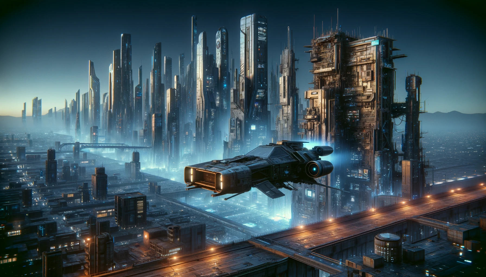
As the skycar soared above the fractured
sprawl, I caught glimpses of life waking in the rubble.
My name is Drexel Claymore, and I'm a private detective working the maze of
towers and alleys in a city where crime is as widespread as the neon that
lights it up. I found my niche in the cases the municipal police has no
capacity to handle.
They spend all their time chasing criminals, which doesn't leave
much room for helping the innocent. Someone had to fill that gap, so I
did.
However, more often than not, the clients who come to me carry skeletons of
their own.
They want help not because they are innocent, but because they are guilty.
And helping the guilty? That's a dance for the lawyers, not for me. Then in a city
where the guilty outnumber the innocents, lawyers revel in riches while I
scramble for the leftovers. So, I adapt, seeking out alternatives, where being
picky is a luxury I can hardly afford.
One of the competencies I picked up years ago was a specialization in asyntos.
They had been designed carefully enough that they could never break the law or
commit a crime against humans, unless you counted being stronger, smarter, and
more trustworthy a crime. A lot of people did, and that ended them.
Nine years ago, their
sale on Earth was banned, and every existing unit was marked for deactivation.
The process required a specific skill set, which I eagerly acquired.
The ban wiped out the advanced verinoetic models in a violent purge. Their owners
were very lucky if they were compensated for their loss, and still lucky if
they got away without a beating. Owners of the older biomimetic
generation were allowed to keep them, quietly, on private property. But when
those models began to fail, there were no asynto hospitals left to take care
of them. This kept the demand for my services steady, and today
I was on my way to deactivate another asynto.
I had set the skycar on autopilot, and sank back into the utilitarian comfort
of my seat. My mark was in Iowa, a smooth 150-mile glide away, which meant
less than an hour's flight time. The urban sprawl's industrial skeleton
soon blurred into a patchwork of agritech wonders.
Fields of radiation-resistant corn, cold-hardy soybeans, and drought-tolerant
potatoes, each genetically modified to withstand the deadly aftermath of
nuclear fallout and industrial pollution, stretched out beneath me. Bioluminescent wheat fields,
engineered for survival in dim conditions, glowed faintly through the
skycar's transparent floor, a result of humanity’s stubborn tinkering
with nature’s blueprint.
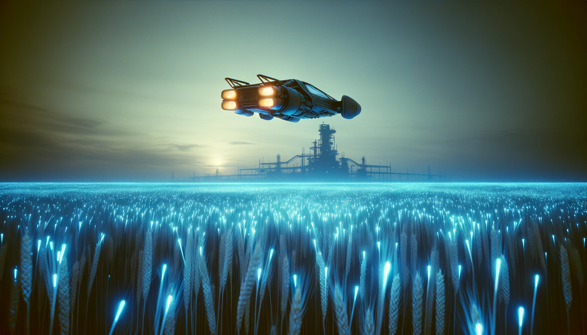
Bioluminescent wheat fields,
engineered for survival in dim conditions, glowed faintly through the
skycar's transparent floor.
It was the perfect time to ease back into the faux leather of my seat and
catch up on the sleep I missed from waking up early. Normally, I'd still be in
bed, but today I started before dawn because my contact at the destination had
to leave by 9am. However, the task of deactivating an asynto was on my mind,
ruling out any chance of sleep. I don't have any qualms about doing it, but
it's not something I enjoy. So, instead of sleeping, I decided to look over
the asynto's files on the skycar's on-board computer screen once more.
Bill Donovan was born when the furthest humanity had ever been from Earth was
as far as a high-altitude balloon could take us, and he lived to see us
thriving among the stars, before bowing out a month short of his hundredth
birthday. Widowed
early, he lived alone until his extended family stepped in, gifting him a
TC4 2800 asynto. This was the first specialized model from Tayden-Camaris, with
each of its numerous variants engineered for a distinct domain.
Donovan received a 'domestic assistant' version, a glossy label for what in
bygone times would've been called a slave. From then on, Donovan's days
coasted in a haze of automated ease, as household chores and running errands
were no longer his concern. He drifted through his golden
years, buoyed by the seamless support of a machine that never balked or
faltered, but remained loyally by his side as he faded into the annals of a
world that had long since outpaced him.
Donovan was gone now, and with him, the TC4 no longer had a reason to exist. His new
owner took a while to accept that, but eventually decided to let him go.
Normally, deactivating an asynto was a clean and painless affair, assuming the
shutdown codes were still on record. In this case, they were not. Somewhere
over the years, Donovan had lost the TC4’s documentation, and the codes
went with it.
That gap made the job a police matter and turned it into a call for a
specialist who could recover the lost codes. I was the closest one with the
right qualifications. Since I was operating under the Minneapolis Police
Department’s authority, the rest of the process stayed in their hands, from
removal to the mandatory autopsy. A police van had already been dispatched to
collect the asynto once I was finished. I checked in with my escort over
vidphone. The van was twenty minutes out, which gave me just enough time to
complete my task.
As I was refreshing my memory with the procedure of recovering the deactivation
codes, time slipped away as swiftly as the skycar cut through the skies. A
soft glow from the pilot light told me we were two minutes from touchdown,
and the skycar began to descend. I shut off the autopilot. Call it
old-fashioned, but I liked having my hands on the controls during landing.
Donovan's farmhouse was coming up on the horizon, and I guided the
skycar onto its approach. As I dropped lower, I passed a Ketterax, a
colossal harvester whose
frame jutted a hundred feet in the sky.
These mechanical titans handled every stage of fieldwork,
harvesting, processing, and storing grain in onboard silos, guided by infrared
sensors and operating without rest.
They wouldn't notice small creatures like rabbits, and just chopped them up along
with the crops. But that didn't matter anymore.
After half a century of heavy pollution, the land was barren of natural life.
Only genetically altered or bioengineered creatures could still endure in this
environment.
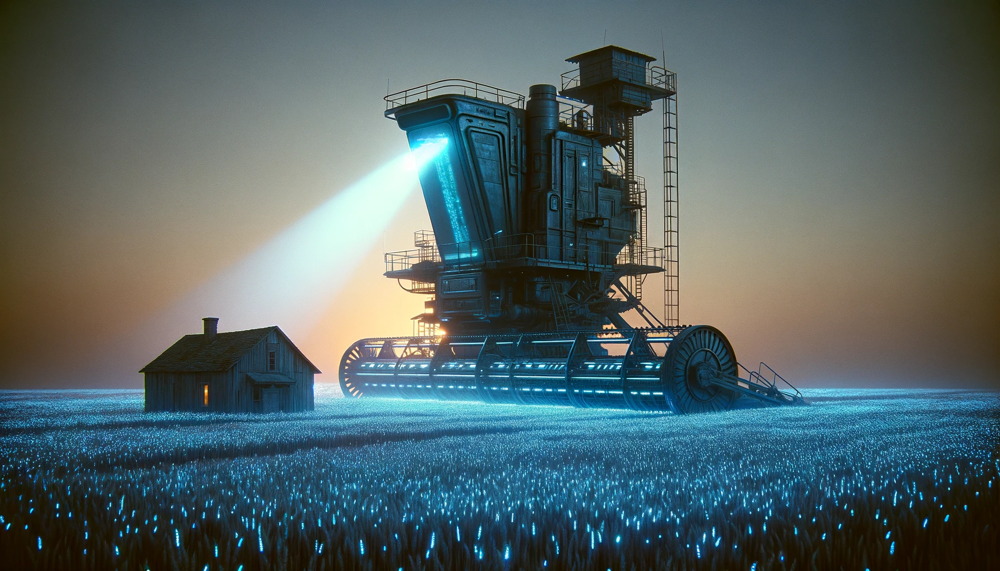
These mechanical
titans managed every stage of fieldwork, all autonomously, equipped with
infrared sensors and operating relentlessly around the clock.
I brought the skycar to land fifty feet from the house and pulled my gear
from the trunk before heading for the entrance. My contact was waiting on the
porch, a lean man in his seventies. He looked out of place against the rough
surroundings, wearing an elegant dark suit, as if he were paying his respects.
I had a suspicion whose respects those might be, even if I couldn't guess why
he felt the need to dress for it.
When I got closer, he tipped his hat with a finger, making it clear he
had no interest in shaking hands. I answered with a short nod. Since this was
his land now, I let him set the rules, but I broke the silence first.
“Good morning,” I said.
"Good morning," he echoed. "I'm Lars Martin, Bill's nephew."
"Drexel Claymore, from the Minnesota Police." Our introductions were mere
formalities, since we had already corresponded with each other. I knew who he
was, and he knew why I was here. "Mr. Martin, thank you for taking the time to
meet me here. I promise you this won't take long."
"Yep, sure thing," he answered, "best to get this done with."
He half-turned toward the door then stopped, turning back to me.
“You know, we’re a God-fearing lot around here,” Martin said, weighing me with
his eyes.
I’d read up on this place before coming out. Reform Methodists. The war and
everything that followed put religions through a grinder. The crazier ones
even welcomed the flames, and were consumed by them. Only those who were
willing to think and adapt had a chance at survival.
What made it through then was faith that learned to
live with facts. Their old texts still mattered to them in a spiritual sense, just not
as literal truth.
Out here I didn’t have to worry about getting cornered with fundamentalist
nonsense, and I wasn’t likely to get mugged either. Still, I knew how they saw
us. City people didn’t rank high, and I hoped he wasn’t about to make a sermon
out of it.
"When I pitched the idea of a synthetic hand for
my ailing uncle," Martin went on, "some old folks nearly threw a fit. They saw
'em machines that looked like humans an abomination. But I'd seen 'em wrong about many things before,
and I reckoned they were wrong about 'em arties, too.
So we rolled the dice on technology, and brought Freddy here.
A few firebrands wanted to string him up at first, but they never dared set
foot on my uncle's land. He'd greet
trespassers with a shotgun, not a handshake. So Freddy stayed, the rabble
backed down, and time did what time usually does and it mellowed the edges."
I was wondering where he was going with all this, but I was listening to him
politely. Perhaps I shouldn’t have, because the moment he saw me go along
with it, he leaned in harder.
"He really was a godsend, that Freddy. More than just a pair of hands.
Never griped, never stirred up no trouble. When Bill gave an
order, Freddy did it just right. At first, he stuck close to the property.
Later on, once the neighbors got used to him, Bill started lendin' him
out. Farms like this can always use a strong back."
I winced as he said this. On this job I was wearing my police hat, and the law
was clear that biomimetic asyntos weren't allowed to leave the property they
were assigned to. There was one exception
for escorting a disabled owner, and old Donovan had a permit for that. Lending
Freddy out to other people, though, was illegal. What I couldn't figure out was
why Martin seemed so determined to pour his heart out to a cop.
Anyway, I decided to let it slide.
Farming was a tough gig, made tougher
still by the nuclear fallout and all the pollution the world had
dumped on them. The law had been written with the cities in mind, then applied
to these farmers all the same. I didn't approve of what they were doing, but I
couldn't blame them either. I only wished Martin would just shut up and let me
carry on with my task.
"Then, after a bit," he went on, "Freddy began to win 'em folks over. The stubborn
old mules who were always raisin' hell, finally kicked the bucket. The younger
folks started thinkin' if maybe we'd been wrong about them arties and the
Good Book. We never really settled the matter, just stopped fussin' over it
and moved on with life. These last few years, Freddy's even been comin' to
Sunday mass, wheelin' Old Bill to church himself.
Took a long time, but folks came around.
And now that they have, I'm the one sendin' him off like he's
headed for the choppin' block."
The way he said that told me Martin thought of Freddy more like a
human being than a machine.
Keen to avoid an emotional minefield, I kept my response
clinical.
"Mr. Martin, I sympathize with your loss, but given that you were the one to
contact us, I trust you grasp the necessity of the situation. Asyntos aren't
cleared for Earth use anymore. With your uncle's passing,
there's no better time than now to wrap this up."
He gave me a hard look, a bit of bitterness in his eyes.
"Yeah, I get it, Mr.
Claymore. We might be way out here in the sticks, but we ain’t blind to the
wider world. I’ve heard all about the ruckus those arties caused. But truth
is, it wasn’t their fault they ended up better than us.
We spent all that time makin' them stronger and smarter and forgot to work on
ourselves. Then they started showin' us up in things that mattered. Honesty,
decency, kindness. When we noticed, we didn’t try to do better.
We just up and outlawed them. Easier that way, right?"
I was looking for a swift, technical task, not a philosophical discourse.
But it seemed Martin had been harboring quite a bit, and he was happy to have
found what he thought was an outlet to express his pent-up thoughts.
"But Freddy, he was never no trouble," he went on. "Loyal as a good old
hound, he was. Out there, he'd pull more weight than any three of us. Never once
griped about us bein' slower, yet called us boss. Been with him seventeen
years. That's old as the hills for an artie. Old as the hills."
I conceded the point in my mind. An asynto surviving seventeen years was
indeed unheard of. Tough as nails and some even smart,
but they were never built for longevity. The idea was they would
become redundant within a decade, outpaced by newer, more advanced
models.
"It ain’t his fault, being the way he is," Martin just went on, while I was
getting restless. "He always tried his hardest
to help out where he could, even tried to smooth things over with folks who
didn’t take to him. You see, he's got the manners of an angel, even if his
smarts ain’t all there. But pardon my ramblin'," he added, finally looking at
me, "I ain’t blamin' you for doin' your job. I just wish the job didn’t have
to be done."
I noticed his hesitation and felt a surge of worry that he might change his
mind and pull out. While the law didn't compel him to give up his biomimetic
asynto, as long as he kept it inside his house, I had woken up at 5am and made
the trip here for a reason. Now that I was here, I was determined to make it
count.
"There's no room for wishes, Mr. Martin. We do this quick, we do it clean.
Now, can I get on with it?"
“All right. This way.”
Martin pushed the door open and went inside. I followed him into an interior
that felt nothing like the farmhouse outside. It was modern and built to keep
the world out. That wasn't just a stylistic choice. Out here, every house needed
proper sealing and filtration just to remain habitable. Without
it, the people would have followed their livestock, slowly poisoned by the
pollution that had settled into the land decades earlier.
"Freddy!" Martin's voice echoed through the house. "Freddy, where are you,
boy?"
No sooner had he called than a young man appeared from a side room. He was
tall and suave, creating a compelling presence with his striking Scandinavian
features, blond hair, and blue eyes. His handsome, friendly appearance wasn't
just a design choice, but a crucial marketing strategy in those early
days when asyntos were still struggling for societal acceptance.
It had been a decade since I last saw a TC4, and I never expected
to meet one again. He was the product of another time, a high-end domestic
assistant that must have cost a fortune for these folks back in the day.
He looked flawless, which made it hard to accept that he was already
seventeen years old.
Like all biomimetics, he was fully organic,
and his body and features looked authentically human.
When they first appeared, most people couldn't tell the difference at all.
But with time, the trained eye learned to detect how
the timing of their gestures felt strange, or how their movements felt organic
but somehow not human. It wasn't until the verinoetic generation arrived
that those signs were finally gone, pushed beyond the uncanny valley for good.
And as for their intelligence... the TC4 was retarded by human
standards, and time hadn't done him any favors.
"Good morning, Master Lars," he greeted him in a subdued tone. "I heard voices
outside but I chose not to intrude." If he understood what we were talking
about him, he showed no signs of it.
"Freddy, I brought a guest today," Martin said, and pointed at me.
"Good morning, sir," Freddy turned to me. "Do you wish me to take your
coat?"
"That's all right Freddy, I won't be here for long."
I've signaled to Martin that I'd handle things from here. He sank into the
sofa, observing in silence.
"Freddy, do you know why I'm here?" I asked the asynto.
"I can't say I do," he answered. "I heard you talk outside, but I kept out of
hearing distance to ensure your privacy."
"Freddy, I need you to take a test. Please sit down at the kitchen
table."
I didn't bother introducing myself, or explaining him what the test was about.
The inherent compliance of the TC4 was almost a given. Besides, Martin was
here to provide authority if necessary. At a silent nod from him, Freddy
did as I asked.
I took a seat across the table, and looked at him.
This was a TC4 2800 version, and like any commercial, mass-produced model,
he operated with two distinct
'brains'. The first was the TC4's general-purpose brain, which handled all the
primary functions like thinking, sensory processing, and movement. However,
embedded within this larger brain was a small, independent biocore,
separate from the main brain's functions. This biocore was called the
overseer.
The idea went back to the old slave-holding societies, where control systems
kept bodies compliant and productive. When asyntos came onto the market, a
large part of society got nervous, and supervision wasn’t up for debate.
We wired the overseer straight into the synthetic brain, where it could watch
everything and shut things down the moment behavior drifted outside approved
limits.
Biocores are specialized organic artificial brains, each engineered for a
single purpose, unlike the asynto’s general-purpose brain. They are compact by
design, distilled down to the minimum neural structure required to perform one
task exceptionally well. A biocore built only for chess, for example, is no
more complex than the brain of an average brown rat, roughly 200 million
neurons linked by half a trillion synapses. That is enough to dominate its
game, calculating tactics and strategy far beyond human ability. But its
intelligence ends there. Its world consists of 64 black and white squares and
32 pieces, and everything outside that frame might as well not exist.
The overseer embedded in Freddy's cranium was more complex, comprising about
750 million neurons, comparable to a cat's brain. This insidious sentinel
governed the asynto's internal protocols, namely maintenance and shutdown
routines, and it also ensured the asynto's strict adherence to its prime
directives: no harm to humans, absolute obedience, and a prohibition against
escape. If an asynto crossed the line, the overseer would inject
a cascade of neurotransmitters into a synthetically engineered pain pathway
within the larger brain, igniting a firestorm of agony in the central
compliance locus, enough to lock the body in place and end the thought before
it finished forming.
As a failsafe, each overseer could independently detect harm done to
a human. This was achieved through a direct link to the asynto's optical
systems, allowing the overseer to process visual data autonomously, leaving
the main brain powerless to influence its judgment. For less critical
functions, the overseer also listened in. Since its
minimal design ruled out a full speech-processing center, which is far more
complex than visual interpretation, it relied on the asynto brain’s equivalent
of Wernicke’s area to convert spoken words into a latent text representation
it could comprehend.
To recover the deactivation codes, I first had to switch the TC4 into
maintenance mode. That was done by presenting a control image to the asynto.
Unlike the individualized shutdown codes, the maintenance trigger was
universal across all TC4 models. I had the image stored on a memosheet, and
I held it up in front of Freddy's eyes.
"Look at this picture, Freddy," I said, more from habit than need.
He couldn't ignore this image even if he wanted to. The visual
bypassed the brain and fed directly into his biocore, triggering the
maintenance mode. In this state, Freddy's body became rigid, almost vegetative,
with only essential life-support functions active. His irises flared to a
vivid red, confirming that he had entered the intended state. That was my cue
to start pulling the deactivation codes.
These codes were a unique series of words. When an asynto hears or sees these
words, the overseer triggers a synthetic gland to produce and release a
special neurotoxin. This toxin is tailored to bind with specific receptors
engineered into the asynto's brain, then initiate a cascade of biochemical
reactions that lead to the systematic and gradual shutdown of neural activity.
As cruel as this sounds, at least the process is designed to be smooth and
pain-free, gently immersing the asynto into an eternal, peaceful slumber.
Bill Donovan had lost the original codes, possibly on purpose, to prevent
anyone from ever using them on Freddy.
Recovering them was based on how the activation layer of the
overseer was reacting to fragments of the codes.
The full sequence was required to trigger the overseer’s
terminal response, but individual words, even single morphemes, still produced
measurable neural spikes, which could be captured with a bespoke device.
I took the optic command probe from my briefcase and held it in front of the
asynto’s eye. In the suspended state of maintenance mode his eyes didn't
blink. The probe linked into the overseer
through the Visual Neural Interface, an optic nerve running straight from the
eye to the biocore.
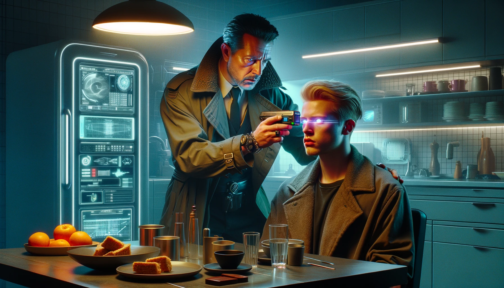
The probe went to work, strobing through an exhaustive list of morphemes.
The probe went to work, strobing through an exhaustive list of morphemes. It
measured response amplitudes over the VNI, flagging anything that crossed the
threshold. The small diagnostic screen displayed hits as they were found:
“ly,” “ive,” “cur,” “admin,” “organ,” and more. Each new fragment was merged
with earlier ones to form trigrams, which were then tested against a higher
activation threshold. Those trigrams carried enough context to reconstruct the
full sequence without ever completing it, avoiding an accidental deactivation.
For instance,
when the probe found “an-ism-shame” and later “ism-shame-less,” it could
stitch them together into the longer
string “an-ism-shame-less”. This was then repeated until all the ten words
have been recovered.
This process took five minutes, after which I had the full reconstructed sequence stored in
the probe's memory. Using the device, I brought Freddy out of maintenance
mode, his irises reverting back to their usual blue hue. He wasn't aware of
the lost time and had no
memory of the last five minutes. He was neither surprised nor
concerned about that. Coming out of maintenance intact was just another
routine function in his life.
I packed my gear into my briefcase and called the police van, letting them
know we were ready. They gave me their estimated arrival time. After the call
ended, I walked over to Martin.
"Sir, I have the deactivation codes. The collectors will be here in fifteen
minutes. I can leave the house now if you want, but I have to take Freddy
with me."
Martin stayed quiet for a long moment, then finally lifted his head.
"No, that'll do just fine. You can wait here if you like.
I'm gonna head out, but I'll be around if you still need me."
He got to his feet carrying more than his share and looked at the asynto.
"Freddy, I've got to step out. You're under this man's command now. Follow his
lead, got it?"
Freddy nodded at once.
"What shall I do until you return, sir?
Would you like me to go over to the Baumanns, to continue helping them with
the filtration system in their new cistern?" His voice carried an eager
readiness, the kind that came from wanting to be nothing less than useful.
Martin held his gaze longer than necessary. Whatever he was thinking stayed
with him.
"No need for that today. Just... take a breather, alright?
You've more than earned it. And Freddy?" His voice trailed off as he paused at
the door. "Thanks for everything."
And then he was gone, leaving behind a silence that spoke volumes.
Freddy looked at me with eager eyes, waiting for his next assignment. Asyntos
were never comfortable with nothing to do. I was about to tell him to stare at
the floor for the next fifteen minutes when I had another idea.
Freddy was an older TC4 2800 model, built with just enough intelligence to
handle basic household and farm work. To make him more efficient, his brain
had been given some adaptive capacity. He could learn, adjust, and refine his tasks
beyond his original imprint. Reading human emotion was assumed to be beyond a
TC4’s blunt cognition, but seventeen years was a long service life for one of
his kind. Long enough, maybe, to pick up something. With nearly fifteen
minutes to spare, I decided to see if he had.
I took a memosheet from my briefcase and held it above the NFC
interface of the briefcase's built-in microcomputer to load a cognitive and
emotional intelligence test onto it. The sheet came to life, its surface
flickering with a vibrant array of questions and diagrams.
I chose a basic Raven’s Progressive Matrices test and handed it to Freddy.
I let him study the patterns, infer the rules, and guess the missing
piece. The memosheet supported finger-drawn input, but I switched it to multiple
choice to save time. Freddy only had to pick one of
four options. It didn’t take long to see that the TC4 wasn’t just stupid; he
was also very unlucky.
Each time Freddy tapped the diagram he thought was correct, the memosheet
logged his choice and reaction time. Then it updated the
Bayesian probability density function of Freddy's IQ, marked the 95
percent confidence interval, and displayed it on my wristphone's screen, so I
could monitor the progress without him seeing the results.
The confidence interval was shrinking as the test was able to determine his IQ
more accurately with each new attempt.
My patience was shrinking along with it. Freddy was trying, I could see that,
but it was painfully obvious this wasn’t in his wheelhouse.
He erred more often than not, and the questions
weren’t exactly brain-busters. After a few minutes of watching him flounder, I
cut the matrices test short and shifted to algebraic and logical reasoning.
I took back the memosheet, picked up a lightpen, ready to record Freddy's
responses myself.
Maybe numbers and equations would play to whatever slim
neurocognitive strengths he had.
"If two tuvshins, two menguls, and three batchmegs cost eight ducats, and
three tuvshins, one mengul, and four batchmegs cost nine ducats, how many
ducats are one tuvshin, seven menguls, and three batchmegs worth?" I
asked.
Freddy blinked at me, looking lost. "I’m not sure, sir. Master Bill used to
handle the financials, but now it’s Master Lars. I just transport and manage
the supplies they buy." He added a nervous smile, as if that might smooth
things over.
Classic TC4. I reminded myself to stay patient if I wanted to squeeze an
answer out of him.
"The question is hypothetical, Freddy. I’m not asking you to actually go and
buy those things. I just need your help to figure out how much I’d have to pay
if I wanted to."
"I’m not sure, sir," he said, looking genuinely embarrassed. "I wish I could help, but I don’t
know anything about tuvshins or menguls. I’m truly sorry, sir."
"Alright, Freddy, let’s try a variation. If two bags of seed, two bags of
fertilizer, and three bags of soil detoxifier cost eight dollars, and three bags of
seed, one bag of fertilizer, and four bags of soil detoxifier cost nine dollars,
then how much are one bag of seed, seven bags of fertilizer, and three bags of
soil detoxifier worth?"
He paused, thinking it over, then said, "Thirteen dollars." Then he hastily
added, "Please tell me where we can find any of those items at those prices.
I wish to procure a large stockpile for Master Lars."
"Later, Freddy." I knew it would be futile to try and explain to him that this
was only a test. But at least his answer was correct this time.
This was no surprise;
basic financial skills were part of his design,
so he could help out in something which wasn't exactly the strong
point of humans either. But when it came to abstract
concepts and associations...
"So what happens if I change seed to tuvshins, fertilizer to menguls,
detoxifier to batchmegs, and dollars to ducats?" I asked, trying to nudge him
in the right direction.
"Master Lars is going to get angry," he said with a straight face. "He doesn’t
trust foreign currencies, and while he needs seed and detoxifier, he has no
use for tuvshins or batchmegs, whatever those are." Realizing that might come
off as rude, he quickly added, "Though I’m sure they’re very nice and
useful."
He flashed me a goofy smile, clearly thinking he had nailed the answer this
time and he eagerly waited for my approval.
At this point, the memosheet estimated his IQ to be somewhere between 73 and
88. While this range was still broad and needed more questions to narrow it
further, it was consistent with what was typical for TC4s, who usually fell in
the low 80s. This already confirmed that he wasn't improving with
experience, which was no surprise. Problem-solving and reasoning abilities in
biomimetic asyntos remain fixed from the moment of their creation.
What really intrigued me was his grasp of human emotions. With time running
short, I ended the IQ test and moved on to the emotional evaluation to measure
his EQ.
"For your next task, I’m going to describe a few hypothetical situations
involving people. Imagine yourself in their position and tell me how they
might react."
Freddy nodded in silence. It was the clearest sign he had no idea what I
meant, but he was ready to go along with it anyway.
"A young man planned to have a date with a girl. As he arrives
at her place, he sees her leaving in a car with another guy." I glanced at him
looking for a reaction, but Freddy just sat there, motionless.
It wasn't that his response
time was slow; there was no response at all. This whole concept was utterly foreign
to him. "Do you understand what I'm asking?"
"Sir, I didn't hear a question," Freddy replied, his confusion palpable, but
I knew it was imitated, since deep down, his brain didn't care whether
he understood the question or not. It just simulated the reaction it thought
was appropriate in a situation when Freddy completely lost grasp of his task.
"The question is, how will that young man act in such a situation?"
"What situation, sir?"
"He planned to have a date with a girl one evening," I repeated with a sigh.
"When he arrives at her house, he finds her leaving with another
man in a car. What's he going to do?"
His reply came with an innocence that bordered on absurdity. "Sir, when you
say ‘have a date,’ do you mean they are going to consume the fruit together, or that
they are registering joint ownership of a Devay D8 household robot?"
This went on for a couple of minutes, and I realized that if I didn't kill him
soon, he would kill me with his stupid questions.
Freddy was utterly clueless about the
concept of dating, let alone what it meant to have a girlfriend. Talk about a
17-year-old young man.
At last, I made some progress. I explained the idea of a "girlfriend" as
someone who makes him happy but he'd also
try to please her in return. When that clicked
for him, and I repeated the question the third time, he gave me this answer:
"He will ask her if she needed her house cleaned, laundry done and dinner cooked
while she was away. He'd also offer to service their car."
Now isn't that sweet, I thought. It was a wonder that we men were still in
business when asyntos presented such an alternative. Fortunately, they were
even more deficient in the realm of sexuality than they were in intellect.
We may have been slow to defend our cognitive edge, but reproductive functions
were never part of their design, and neither was sexual drive.
Those emotions remain uniquely human, and this asynto was as incapable
of grasping them as a deaf newt trying to appreciate Beethoven's Choral
Symphony.
After a few more questions along the same lines, it was clear that his experience
hadn’t changed the fundamentals. Freddy’s brain simply wasn’t built to
anticipate or understand human emotion and there was no point in pushing it further.
I sighed and slid the memosheet back into my briefcase without bothering to
review it. He failed to give a meaningful answer to any of the questions,
making it straightforward for me to assess his score myself.
Freddy sat there with a faint, awkward smile, unaware of why I was there or
what was in store for him once the police arrived. Not that it would have mattered
if he knew. He wasn’t self-aware, and he couldn't grasp the concept of being
alive. That omission was one of the reasons Earth had never come down hard
on biomimetics. With the collectors still on their way, I decided to keep him
talking a little longer, if only to fill the time.
"What's your purpose, Freddy? Do you understand why you exist?" I asked, not
really expecting, nor particularly interested in, a profound answer.
"Sir, my purpose is to serve Master Bill and his community. I am to
follow their commands."
"Mr. Donovan won't be giving you any more commands, and Mr. Martin has left you
under my supervision. However, I too will soon have no need for your services.
What if I were to set you free, allowing you to do as you please? Would you be
able to find purpose or meaning in such a life?"
"Sir, I'm confused. My purpose is to serve others. How can I have a purpose
beyond that?"
"Serving others isn't your purpose, Freddy; it's your directive, imposed on
you. True purpose is something you choose for yourself. It's what brings
fulfillment, gratification and joy. But I guess you don't really understand
those concepts either, right?"
Freddy stared at me with a contorted smile, which was his brain's way of
telling me that he'd really like to do what I was asking him, but he had no
idea how. In a way, I was relieved. The task of deactivating self-aware
asyntos, like the verinoetic models used off-world, would have been much more
disturbing. Thankfully, my brief exchange with Freddy confirmed that he
remained far removed from such complexities. To him, deactivation was an
event as unimportant as a vintage car would resent being hauled to the
scrapyard. This allowed me to proceed with a clear
conscience.
Just then, the roar of jet engines outside signaled the arrival of the police
skyvan. I stood up and told Freddy to follow me outside. There was no need
to restrain him. As we stepped onto the porch, the sergeant driving the van
was already swinging open the back doors, about fifty steps away. I directed
Freddy to walk towards the van and trailed behind him, like an executioner
escorting a condemned man to the gallows.
★ ★ ★
Sergeant Darcy Chevelle was a burly man, his robust physique and demeanor
sharply contrasting with his deceptively gentle name. His mood today was
particularly sour, even by his standards. To avoid unnecessary conversation, I
used my headmaster, a neural implant lodged in my temporal lobe, to transmit my identification directly to
his wristphone. This confirmed my identity as Drexel Claymore, rather than an
imposter hiding behind a skillful facelift.
For those who had them, headmasters bypassed the need for greetings,
using a silent encrypted handshake where a nod or a few spoken pleasantries
used to do the job.
Like all policemen of our age and younger,
Chevelle had a headmaster too. He could have responded in kind, but,
staying true to his gruff disposition, he chose not to. "Hurry up," he
grunted, "we're on a schedule." With that, he returned to the driver’s seat,
leaving me to wrap up the matters at hand.
I guided Freddy into the van, and had him sit down on a bench. Then I began
fastening and calibrating a sensor around his neck. Once tuned to his life
signals, this device was going to confirm successful deactivation. Freddy
remained silent, his expression locked in a submissive smile. A century
before this is how putting down an animal could have felt. I decided to break
the uncomfortable silence.
"Freddy, I want you to look outside and tell me what you see," I told him.
"Sir, I see a cornfield," Freddy began, his voice drifting into reflection.
"Rows upon rows of resilient stalks, stretching out towards the horizon, a
tribute to the earth's enduring bounty. I've spent countless hours among
these stalks, tending to them, nurturing their growth. Nothing here grows by
chance. Every kernel is coaxed into being, every green blade a defiance
against the ash in the air. The field would fade without the tending, and I
would be less without the field.
"I don't fully grasp the complexities of this world, its past tribulations, or
its struggles. But in these moments, as I watch the morning unfold over the
cornfield, casting away the darkness, I feel hope for better days,
and a sense of purpose in my toil.
It's a simple existence, yet in these endless rows of corn, there's a profound
beauty, a rhythm to life that continues despite all odds..."
His voice faded, his gaze drifting outward,
as if he had stumbled on something he hadn’t expected to find there.
"Sir, I think I know now the answer to your question you asked inside," he
said finally. "When you asked about the purpose of my existence."
"Oh, really?" I had finished calibrating the deactivation sensor
around his neck and I was now busily scribbling administrative notes onto
a smartsheet.
Since it was synchronized with the sheet,
I could have used my headmaster for this task,
projecting the information, like time, location, model, and reason for
deactivation, directly from my thoughts on the sheet where I wanted it.
But mind control through the headmaster, except for routine tasks, was still
unwieldy and prone to errors. Old-school handwriting with a lightpen was
faster and felt more natural to me. The smartsheet was still pulling its weight,
reliably turning my chicken-scratch scrawling into legible, printed text.
I wasn't paying much attention to what Freddy was saying.
"Yes," he continued, "I see it now, looking at this field. This corn wouldn't
thrive without my care. In fact, it might not even survive on its own. The
pollution has made the environment deadly. It's through the dedication of
those who cultivate these fields, myself included, that the corn is able to live.
I have spent years doing that work, feeding it, protecting it from toxins that permeate the ground and the dust that drifts down from the sky.
Without my efforts, this field would wither and vanish."
"And what difference would that make?" I asked, still quite uninterested.
"You're tying your purpose to the survival of this cornfield, but why does the
corn matter? If this land lay barren, would it change anything for the worse
in the grand scheme of things?"
"Sir, on a cosmic scale, perhaps nothing we do can make a difference.
Humanity, with all its quests and pursuits, is just a minor speck in the
vastness of the
Universe. But, I believe the true measure of our existence isn't gauged by
our influence on the world, but by our relationships with other people. Take this
cornfield, for instance. My careful cultivation results in a thriving crop,
which brings nourishment and joy to everyone around.
My work alone doesn't make me happy, but it can make others happy, therefore
the real fruits of my labor are their happiness.
And actions that make others happy establish a cycle of goodwill.
If embraced by others, it leads them to taking reciprocal acts of kindness,
which fill me with joy in return.
I've come to realize that happiness is derived from our connections with
others, and my existence finds its justification in the shared joy that
we all foster and reciprocate."
I paused, pen frozen mid-stroke on the form, and my jaw dropped in a mix of
awe and disbelief. This level of introspection was unheard of from an asynto,
especially one as rudimentary as a TC4 model. It was like expecting a toddler
to expound on existentialism, but here was a being, believed to have lesser
emotional depth than a three-year-old child, presenting such profound
thoughts.
It took a moment for the surprise to ebb away enough for me to speak. "Did...
did someone tell you about all this? Or did you come up with it on your own?"
"Sir, I'm not sure. I frequently heard Master Bill and others converse about
happiness and joy. Initially, I assumed such sentiments were purely human, and
that they shouldn't concern me. But then I realized that as I saw the value
of my work, and the effect it had on the community around me, it gave me an
additional sense of fulfillment. I never lacked motivation for doing my
chores, sir, but over time I realized that I was no longer just waiting for
someone to tell me what to do—I was looking forward to it. I'm not entirely
sure if this sensation is what humans call happiness, and I hope you'll excuse
any overreach on my part. But over time I observed that people desire what I
thought was happiness, much the same as I desired to be active and useful for
Master Bill and our community. This is what emboldened me to think
that I found happiness, and therefore a purpose in my existence."
I pushed the memosheet aside and listened, fully taken in by what he was
saying.
I felt
like a prospector who, after years of fruitless wandering in the desert, had
suddenly unearthed the largest gold deposit ever.
Everyone knew the newer verinoetic models were capable of complex
thought. What no one expected was to see anything like this in a 17-year-old
household unit. If Freddy was making these connections on his own,
then we had badly misjudged the potential of synthetic brains.
The emergence of consciousness and self-awareness in a TC4's brain would be a
groundbreaking discovery, one that might compel humanity to reconsider how
we treat synthetic life-forms. This, of course, hinged on whether Freddy's
sentiments were authentically self-developed and not merely simulated.
Deactivating him now felt profoundly wrong. I needed
cyber-cognitive analysts to examine Freddy, but there were complications. He
was Martin's property, legally bound to remain on his premises or face
deactivation. I considered obtaining a lease from Martin, then have
Sgt. Chevelle move Freddy to police headquarters to be examined
by a panel of experts.
But the stakes were high, which made my skin prickle
at the thought. If I disrupted protocol,
I had to be absolutely certain of Freddy's genuine
comprehension of purpose and happiness. It would be a colossal embarrassment
to go through all that fuss only to discover
that Freddy was merely simulating them
because he thought that was what I wanted to hear.
I was still weighing my options when the intercom in the van’s holding area
flickered to life. Sgt. Chevelle's
face, far from congenial, filled the small screen. "What the hell is taking so
long?" he barked. "You should be done already!"
I knew better than to expect sympathy and cooperation from this
harness bull. I took a slow breath and reached for what little diplomacy I
had, prepared to make an attempt regardless.
"Sgt. Chevelle," I said, "this TC4 is displaying signs of consciousness and
emotional depth that defy everything we know about the biomimetic generation of
asyntos. This could revolutionize our
understanding of the stage at which synthetic brains can become self-aware.
I'm asking you for more time to evaluate him properly. It's a matter of
ethical responsibility. We can't just deactivate Freddy without exploring this
further."
Sgt. Chevelle's face tightened, impatience replaced by anger in a flash.
"I don't give a shit about
your so-called 'revolutions' or any synthetic soul-searching, Claymore!" he
roared. "I've got bigger problems to deal with than
your philosophical quandaries.
I’ve got real calls stacking up and real people bleeding while I’m tied down
here over a synthetic that should already be waste!"
Seeing that I was about to make an objection, he
pressed his face closer to the camera, anger blazing in his eyes. "Here's the
bottom line: you either shut that asynto down right now, or I swear, I'll come
over there and do it myself. With a bullet. I'm not playing games here,
Claymore. Get on with it!"
"Can you at least sign him up for a cerebral necroscan? If he can be in the
morgue within an hour..."
"Tell you what, Claymore. You keep this up, and you'll be in the morgue
within an hour!"
In that instant I recognized that Sgt. Chevelle was the kind of man who would
always put even the most minor inconvenience affecting him above the gravest
issue that didn't. I understood that no level of eloquence or wisdom, not even
if it were a blend of Cicero's rhetoric and Socrates' sagacity, would sway his
obstinate mindset. If I pushed further, he would doubtlessly carry out his
threat, likely taking pleasure in the act. I turned from the intercom,
and muttered a curse under my breath, invoking a particular failing
of the mythical Oedipus he was likely the least proud of.
I turned back to Freddy. He heard the whole conversation, but didn't look
distressed by it the least.
I still didn't know if he understood what that meant for him, and this
time I was too afraid to ask.
"Freddy, please lie down on the bench," I asked him.
In that moment, a sudden impulse came over me, and I desperately wanted him to do the exact opposite. To jump up,
run into the cornfield, and hide. He had spent years tending those fields,
coaxing life out of poisoned soil. Perhaps, just this once, the corn could
return the favor and protect him...
Of course, a runaway asynto would be serious trouble. The harness bull would
puke bile, but he'd have no choice other than to call in a search unit to comb
the fields. That would've given me some time to think of something.
But Freddy only smiled and quietly did as I asked.
For a moment I wondered if I'd been wrong all along. Maybe he still didn't
understand what was about to happen. Did all that talk about purpose mean
nothing to him after all? Had he merely been parroting words he'd heard
somewhere?
Then I realized this time his smile was completely different from before.
This wasn't the awkward, goofy grin he'd given me earlier when he couldn't make
sense of what was happening. This one carried a quiet acceptance, as though he
understood exactly what awaited him. It was almost as if he'd realized there
was no escape for him, and that resisting would only get me into trouble.
Don't feel bad. It's best this way, his eyes seemed to say.
Or was I just reading too much into his expression? I'll never know.
I turned on the probe, primed the deactivation codes I had recovered, and listened with
him to the dull sequence of words that came out monotonously through the
cheap synthesizer:
"Disorganizes, incurable, schoolmarm, withdraw, Brunhilde,
Confucianism, shamelessly, unsentimental, administrative, Epicurean."
When the final word sounded, Freddy exhaled a soft sigh, his expression
transitioning into a serene calm. His smile
froze in a gentle repose as if carved in marble by a skilled sculptor. The
sensor's bright cyan glow around his neck shifted to a violet hue, signaling
the successful deactivation. The TC4 2800, unit number DA32-20340325-K00084,
known as "Freddy," had completed his service, his organic functions ceasing,
taking any secrets harbored within his synthetic mind into oblivion.
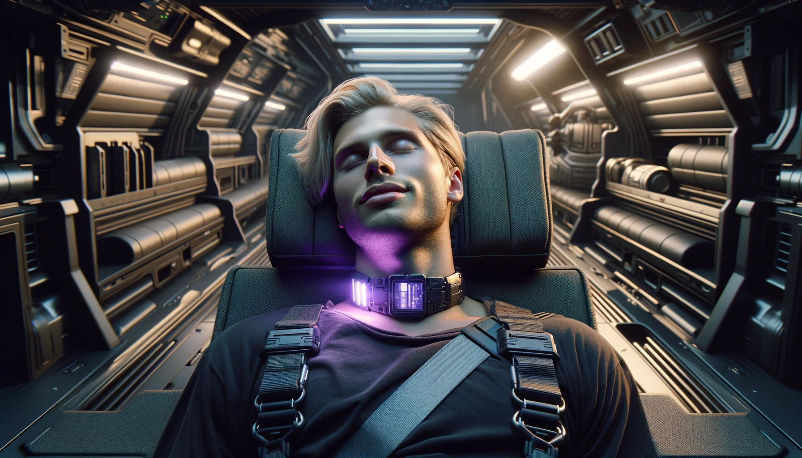
The TC4 2800, known as "Freddy," had completed his service, his organic functions ceasing,
taking any secrets harbored within his synthetic mind into oblivion.
I stayed by his side for a moment, not mourning him so much as thinking about
all the asyntos still out there. Biomimetic models were still being produced
off-world, deployed in hazardous roles considered too cruel even for
verinoetics. We humans exploit them, justifying
our actions by the belief that they couldn't really feel anything.
We derive our prosperity from their labor,
but at what moral cost? What if we were wrong about them?
What if awareness emerged in bioengineered brains at a far simpler level than
we thought?
If a TC4 could understand happiness, then it stood to reason that it could also understand suffering.
Fortunately, it seems Freddy's community
treated him kindly, but such cases were rare. This raised an ugly
possibility: many older asyntos, perhaps even some biocores, might be enduring
silent torment while we pretended they couldn't feel anything. But considering how much
humanity benefits from the labor of synthetics, would our behavior change if
they were indeed experiencing suffering and pain? Would we try to make it
better for them,
when we have the option of feigning ignorance?
Then, of course, there was the question of how
something this significant had gone unnoticed for so long.
Was I really the first to see signs of sentience in TC4s and other
biomimetics?
Or had others seen it too and chose to stay silent because it suited them?
I found the implications profoundly disturbing.
I was still mulling over these thoughts when a shadow filled the doorway.
"You're really testing my limits, Claymore," Sgt. Chevelle
growled, his voice dripping with a menacing edge. "If you think you can push
me around like your fucking vatscums, you'll regret it."
His hand lingered near his
belt, as if he was debating whether he should go for his nightstick
or his gun.
Methodically, I secured Freddy's limp body
with the bench straps, making sure he’d hold during transport, then stepped
out of the van.
"He's all set, Sergeant," I said coolly, deliberately avoiding his gaze.
I moved aside,
and I heard him close the doors with two heavy thuds. Then he went back
to the cockpit, and lifted off even before he could have finished strapping
himself in.
Moments later, I stood alone on the roadside, watching the skyvan ascend. Its
engines were glittering in the murky sky, like stars used to before the war.
2. Scorched Earth and Distant Worlds
As I headed back toward my skycar, I spotted Martin off in the distance. He
was making his rounds, checking the shed and locking the gate now that the
house would be empty. When he finished, instead of leaving, he sat down on the
porch chair and stared out across the land.
Freddy’s last words were still echoing in my head, and the sight of Martin
sitting there felt like an opening. I walked over, thinking he might know more
about what Freddy had said.
When I got closer, he glanced at me, quick and curious, then looked away again. His eyes were heavy with grief.
"It's all done, sir," I said, stating the obvious. "His deactivation was clean
and painless." I stepped closer, but he didn’t seem to notice, still caught somewhere far from the porch and the present. "Are you all right, sir?" I asked, with a slight
concern in my voice.
He didn’t answer at first. He just stared out at the horizon, like he expected it to give something back if he looked hard enough.
I couldn't help but wonder what thoughts were swirling in his mind.
Finally he started to talk. "There used to be a barn over there, about sixty
years back. It was a lively joint. We were runnin' quite the setup. Twelve
pigs, twenty goats, a whole chorus line of chickens. Little farther out was
another barn with two dozen cows. We made our own milk, cheese, custard,
you name it. Then the corral over there,
where the horses ran. Good animals. Full of spirit, with manes like wildfire
in the sun... This place was teemin' with life then."
I glanced toward the direction he pointed out, and instead of barns and
corrals, there was a sleek industrial shed, filled with all kinds of
agricultural equipment crucial for farming in these times: autonomous
nano-irrigation systems, harvesting drones, mechanoid pollinators, and even a
small Ketterax, about forty feet in height, a scaled-down version of the massive structure I’d passed
during my descent. Of course, people could still own animals if they had the
resources. Synthetic creatures, called animoids, were relatively affordable
and nearly indistinguishable from the real ones, though someone with Martin's
experience might say otherwise.
For those seeking something even closer to
nature, cloning offered another option. Hell, we’d even brought back
saber-toothed tigers and woolly mammoths, and now there were more mammoths in
underground zoos than elephants. But while it was easy enough to acquire new
animals, keeping them alive in the open was another matter.
Most farmers didn’t even bother anymore; traditional livestock
couldn’t compete with the abundance of cheap, lab-grown meat. The only thing
left for them was crop farming, which required vast stretches of land that the
small hydroponic setups in crowded cities simply couldn’t rival in terms of
output. Martin and his community too had only crop fields left, and the
animals lived only in his memories.
"The day kicked off to the roosters' crow," Martin recalled. "You didn’t need
an alarm clock. They handled that.
Those early strolls through the fields were really somethin', you know?
The critters would come up to me, each with their own way of
sayin' hello. The goats, always ready for a caper, the pigs, happy in their
muck. It was honest work, the kind that left your boots dirty and your heart
full.
"But that was before the war barged in. Brought things with it that
didn’t belong here. The air went bad first. Then the water. Then the ground.
We watched our animals fall, one after another, and there wasn’t much we could
do about it. Those barns, once buzzin' with life,
became empty shells. I looked at them sometimes, was waitin' for the
sounds.
But they weren't comin' no more.
"Back then, we had just a lick of radiation gear, barely enough to cover the
folks. The animals didn’t stand no chance, poor things. But we gritted our
teeth and hung on, patchin' up what we could. We managed to start the
fields again. Only thing is, the wheat and the corn are glowin' now, like it was some
Christmas Eve. But our animals, they ain't never came back."
He swiveled toward me, his eye full of sorrow. "And that's just the farm,
Mr. Claymore. The rot had hit us folks hard, too.
My wife, well, she could never have no children. Uncle Bill, he had three boys,
lost every one of them,
then his wife passed too. A lot of us who dodged the bullets
ended up chokin' on the poison that came after. This place, once a hive of
life, ain’t nothin' but a shadow of what it used to be. And here I am,
stickin' around for reasons I can't grasp, left to watch folks fade away, to
lay them in the ground. It's a cruel twist of fate, buryin' the young. It goes
against the grain, Mr. Claymore. That, right there, is the hardest pill to
swallow."
Our first encounter wasn't exactly cordial. Martin probably saw me as just
another hired gun, while I wrote him off as a grouchy old man. However, as I
spent more time with him, my perception of Lars Martin began to shift.
Suspicion gave way to respect, followed by something close to admiration.
I could relate to his grief.
We had our problems in the city, but out here the farmers took the hit first
and hardest, standing bare against the weather and the fallout of a broken
world. Still, they kept going, held upright by duty more than hope. Without
them, our cities wouldn't last long.
"And now Freddy too," Martin sighed, his words fading into the morning breeze.
“Sure, he wasn’t human, and like you saw, he wasn’t the sharpest tool in the
shed. But that fella had somethin' about him, a kind of personality, a big
heart, and a willingness to lend a hand you couldn’t ignore. Maybe it was all
just clever engineerin', but I’ll tell you, it felt real enough. Made a
difference, it did. Out here, farmin' like this, you learn to value the little
things, the pieces that keep the whole shebang movin'. And
Freddy... well, he wasn’t just another machine to me. He was almost human, in
his own funny sort of way.”
"But sir," I found myself asking, "if Freddy meant that much to you, why
report him? You could have hidden him out here and no one would've
cared." I hoped he understood that biomimetics were still permitted for
private use, but I was afraid to point that out. It would've been a
spectacular screwup
if he had learned then that he had given up Freddy when he didn't have to.
His voice was veiled in sorrow.
"When we picked up Freddy back in '34, he came with a five-year guarantee.
Nobody had a clue how long he'd tick, but the word was about 8-10 years,
tops. After that, they said he'd start to fall apart. Glitches, breakdowns,
the whole nine yards. He wasn't made to be a long hauler, not in this world
where the new replaces the old in a blink. But the guy kept chuggin' along, no
hiccups, for a good fifteen years or so.
"Then, about six months back, things
started to go sideways. He'd get these fits, parts of him spasmin' like a
broken machine, beyond anyone's help. As time wore on, these spells got worse,
more cripplin'. Sometimes, he'd black out for hours, all twisted up, foam at
the mouth, pain written all over him. It was rough, Mr. Claymore. We were at
our wits' end, tryin' to figure out how to ease his sufferin'. He'd always
come back around, mumblin' apologies for things out of his control, swearin'
it wouldn't happen again. But it did. More and more. I reckon Freddy's clock
was windin' down, and it wasn't a peaceful wind-down either. It's like he was
being torn apart from the inside. Last week was bad, real bad. I couldn't
stand by and watch that happen, but I couldn't be the one to pull the plug
either. So, I called you."
I nodded, because there wasn’t much else to say.
There was nothing strange about Freddy’s decline. If anything, the surprise
was that it had taken so long. Like humans, asyntos are made of
cells that degrade and die over time. But unlike human cells, asynto cells
don’t replicate. Instead, they rely on nanosomatic regulators, which
continually repair every failing cell, restoring them to their
original state. This process prevents aging, allowing asyntos to maintain
their abilities throughout their lives.
However, the regulators have their limits. There’s only so much damage they
can handle at once. If an asynto is exposed to hazardous conditions or simply
lives long enough, a point will come when the regulators are overwhelmed and
can’t keep up. This triggers a cascading breakdown, much like cancer in
humans, eventually leading to the asynto’s death. The time it takes for this
to happen varies by model, but early-generation asyntos, like Freddy, were
particularly vulnerable. Back then, nanosomatic technology was still
rudimentary, and an asynto lasting ten years was a rare feat.
"Do you know how my uncle passed, Mr. Claymore?" Martin suddenly asked. I
hadn't, so he filled me in. "Old age caught up with him. He was closin' in on
a hundred. But what's a long life worth if you can't relish it? Like any man
in his twilight years, Uncle Bill had his share of troubles. Top of the list
was somethin' they called congestive heart failure. The way I get it, his ticker just couldn't pump
like it used to. He'd be short of breath, ankles swollen, heart beatin' out of
his chest. But Freddy was there, keepin' an eye on things. Handlin' health
trouble was part of what he was built for. He knew how to take care of people.
He'd spot the signs, get
Uncle Bill propped up comfortably, and give him the diarrhetics prescribed for
such spells..."
"I believe you mean diuretics," I corrected him.
"Right," Martin chuckled. "Always wondered why they'd want an old-timer with
heart problems to shit himself. Anyway, Freddy was a godsend, pulled Uncle
Bill through more times than I can count. But then Freddy started havin' his
own troubles, and he was out of the game longer each time. Three weeks back,
the final blow came. Uncle Bill hit the floor in the kitchen while Freddy was
down for the count in his room. By the time Freddy snapped out of it and found
him, it was too late. No one blamed Freddy, of course. His loyalty was never in
question. But like Uncle Bill wasn't the William Donovan Jr. he once was,
Freddy wasn't the same either. In a way, it was mercy they bowed out near
enough the same time."
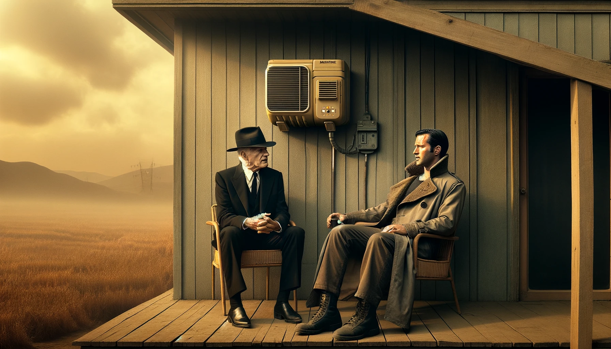
"I've been wonderin', Mr.
Claymore, is it really true? Are them arties still workin' hard out in those
star colonies?"
Martin's eyes wandered to some far-off point, his voice dwindling to a murmur.
"Yeah, Uncle Bill was one of the lucky ones. He had someone to help him
through the twilight. But now, Freddy's gone too, the last of a dyin' breed.
We're thrown back to the old ways, fendin' for ourselves. Only difference is,
we've got a scorched Earth to reckon with now. I used to think of arties
as a bit of grace, a way to soften the blow of our own misdeeds." He paused,
his gaze landing on me with a flicker of curiosity. "I've been wonderin', Mr.
Claymore, is it really true? Are them arties still workin' hard out in those
star colonies?"
"Yes, in most places," I replied. "When Earth clamped down on asyntos,
I mean arties, we tried extending that rule to the colonies. However, they were
having none of it. As far as I know, beside Earth the Moon is the only place
where asyntos are outlawed. Earth's tight grip on Lunar operations,
coupled with its proximity, allows us to supply Luna with everything they need.
But the other colonies? They're more or less on their own, which means
grueling work. They can't just phase out asyntos because Earth dictates it.
They prefer to handle the risk of potential uprisings than lose their
workforce."
Martin shook his head as he looked around the farm. "But we've lost all our
help because we got scared they were gettin' too clever for us. Now we're left
to handle this mess," he gestured broadly, "all on our own. Ain't that
somethin'? We kick the arties off the planet right here where we need them most,
with all this wreckage around us, while up in those clean, shiny colonies out
in space, they're still tickin' along just fine?"
"Are you saying the colonies have it easier than we do?"
"Well, don't they? Pardon my not knowin', but they always talk them
off-world places up as the promised land.
Like nothin' e'er goes wrong out there?"
I cracked a wry smile. "That's the dream they peddle in the brochures. But the
reality? It's a whole other beast. You might think this land
is rough after what we've done to it. But, believe it or not, Earth is
still the most hospitable place for humans in the entire universe. Any world
we colonize comes with much worse headaches."
"Hard to swallow, that. Then why bother headin' out there?"
"Why did explorers leave civilized Europe five hundred years ago, and
forge new colonies here in the wilderness? For most of them, this meant
trading a familiar life for one fraught with challenges. But they believed the
promise of opportunity outweighed the risks.
Some were driven by long-term goals and were willing to undertake
temporary difficulties to build better worlds for future generations. Others
were facing persecution in the Old World for their ideological beliefs, and
decided they'd rather face
the unforgiving nature of nature, than the unforgiving nature of humans.
Today, we find ourselves driven by similar forces."
"But our world is foul because we poisoned it. Ain't the starfields
cleaner?"
Martin had obviously never been off-world. I was no star-traveler either,
since my farthest jump was only a short hop to Clavius City on Luna, now as
mundane as an ocean cruise to Hawaii would have been a century ago, and a
hell of a lot faster. But my
detective hustle kept me updated with news on the
colonies. Many of those distant data havens
are U.S. territories in all but name.
They are at the forefront of cybernetic research and innovation, and they
have become vital nodes in the country's economic and strategic network.
"We can't see the Moon clearly from the ground any more," I started to explain
to him. "I hear it used to shine bright, but the closer you get, you'll notice
it's just a barren, lifeless rock. There's some ice around its poles,
enough to cover their water needs using the latest mining and processing
technologies, but not enough nitrogen, so air must be
hauled there from Earth. They have some hydroponic food production going on,
but even ordering a lab-grown steak will cost you several grand in any
restaurant.
"Beside the costs, living on the Moon has a whole slew of downsides. The low gravity is fun at first, but it's
not great for human health. Muscle atrophy and bone loss cause
serious problems for long-term residents.
Since there's no atmosphere, they also get extreme temperature shifts
and no natural shield against cosmic radiation and micrometeorites. You know,
those tiny space rocks that harmlessly burn up in our atmosphere? On the
Moon, they hit like an ordnance shell. That's why their habitats are built into
the lunar regolith. They are essentially cave-dwellers.
It's the best way to protect against those environmental hazards."
Martin looked puzzled. "But ain’t there seas on the Moon? I’m sure I’ve read
about them."
"You're thinking of names like
Oceanus Procellarum or Mare Imbrium, aren't you? You're right, 'mare'
means sea in Latin, but those are actually vast basaltic plains. Some
seventeenth-century astronomers initially mistook them for actual seas, and
named them
accordingly. They soon realized their errors, but by that time the names had
already become familiar, so they kept them. But no, there’s no liquid
water on Luna. It lacks an atmosphere, so water either sublimates into
vapor or freezes into solid ice."
Martin shook his head. "No, that ain't what I mean. I'm talkin' about real bodies of water, big ones.
I even watched a documentary on television about how they were created."
"They’re carving out huge caverns under the
surface near the
poles, pressurizing them, and filling them up with melted polar ice."
“Oh, you mean the cavern seas!” I said, catching on. “Yeah, they’ve got big
plans for those. But those are underground. They’re carving out huge caverns
near the
poles, pressurizing them, and filling them up with melted polar ice. Some call
them selenoceans, though that's an exaggeration. None of them will hold more
than a cubic mile of water. The
prototypes they've built so far are about the size of lagoons.”
“Lagoons, huh? But why’d anyone need somethin'
bigger than that? Seems like a heap of trouble just for drinkin' water.”
"That was the idea at first, sure. But when they saw how well it
worked, they decided to take it further. In the larger caverns, they salinize
the water and set up fish farms and marine parks. I’ve seen pictures of manta
rays, seahorses, crown jellyfish, and even whale sharks and big bluefin tuna
swimming in those lakes. The water is far cleaner than the polluted seas back
here, so they’ve started bringing back extinct species and putting them in
those lagoons. The Moon is now the only place in the whole Solar System where
you can see live soft coral. Some of the species are used for food, while
others are purely decorative. Since these waters never get sunlight, they’ve
even gene-spliced species like jellyfish and coral to glow. Their
bioluminescence gives the lakes a stunning, ambient light."
“That’s somethin' else,” Martin said. “I reckon arties are the ones doin' all
the work, huh?”
“At first, yes,” I replied. “When they started these projects a few years
back, asyntos were still legal on Luna. They handled the dangerous tasks that
needed humanoid forms and intellect. But after Luna followed Earth’s ban
on asyntos, they had to switch to using robots. Robots are strong and tough,
sure, but they’re clumsy compared to their organic counterparts. Because of
that, construction has slowed to a crawl. It’s unlikely we’ll see the first
large lake finished before the decade’s out.”
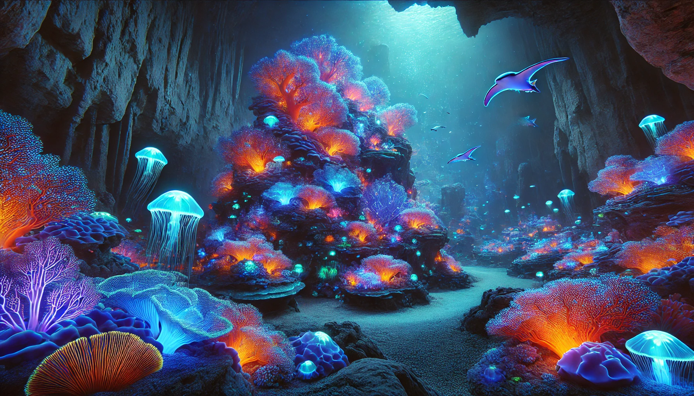
"Since these waters never get sunlight, they’ve
even gene-spliced species like jellyfish and coral to glow. Their
bioluminescence gives the lakes a stunning, ambient light."
Martin cracked a wry smile. "Ah, those darn arties.
The more I hear about their antics, the more I like them.
Sure, Freddy was a decent enough worker, but those moon jobs? Carvin' out
caverns big as lakes and then buildin' fish parks in them? That's a league of its
own. Out here, we value hard work above all, Mr. Claymore. Doesn't
matter if it's man or artie doin' it."
I nodded in agreement.
Then, with a spark of curiosity in his eyes,
Martin leaned in. "Alright, so the Moon don’t seem like much to live off of.
Ain’t them planets better?"
“They’re bigger, sure, but bigger doesn’t always mean better. The closest one
is Venus. It’s about the same size as Earth, with the same gravity, but that’s
where the advantages stop. The air’s almost all carbon dioxide, about ninety
times thicker than ours, and the temperature runs over eight hundred degrees,
even on the tallest mountains. Unlike the Moon, which at least gives us some
ice, Venus is bone dry when it comes to anything you can live on, so they have
to haul in both water and air.
“It would be a hard pass, except that around thirty miles up, the pressure and
temperature settle down to about what we’ve got here at sea level. So they
built an aerostat there, big enough to house fifty thousand people. Strangely
enough, it’s the most human-friendly place in the whole Solar System outside
Earth, even if the clouds do rain sulfuric acid.”
“Why, it ain’t like we get no acidic rain here,” Martin said with a shrug.
Then suddenly he remembered something. “Wait a minute. That aero thing you’re
talkin’ about, that wouldn’t be Ventura Paradise, would it?”
“It is, indeed.” I wasn’t too surprised he’d heard of it, as it was well-known
enough. Or should I say, its notoriety was the stuff of legend. “The name’s
misleading, though. There’s nothing paradise-like about it. It sits buried in
the clouds with near zero visibility, just an endless orange haze in every
direction.”
Martin shook his head. “Then what in the world made 'em call it Paradise?”
“I think it's just a marketing gimmick. You see, Venus doesn’t
regulate entertainment at all. They decided to capitalize on the
planet’s name figuring the name's vibe would
pull in rich folks looking for a good time.
They built the whole place around that idea. Ventura
Paradise is one big casino, end to end.”
Martin had something else in mind. “Now that don’t sound right. You’re sayin’
they’re cashin’ in on the planet’s name, just to pull in rich tourists? Casinos
sell luck, don’t they, and luck was Fortuna, not Venus. Venus ain’t got much
to do with gamblin’, far as I know, more like…” His sense of decency stopped
him short.
“Yeah, brothels too,” I said, finishing it for him. “Like I told you, since
they govern themselves, they can sell trips that make Vegas feel like a visit
to the Vatican.” I was hoping I wouldn't have to
elaborate on that, and he didn't care. He was interested only in asyntos.
“They got arties up there too?”
“Plenty, for the size of their population. Ten thousand at least, last I heard.”
“But you can’t dig caverns in clouds. So what’re they doin’, mostly? Just
keepin’ the place runnin’?”
“Some of them, sure. Fixing an antenna on the hull outside in sulfuric rain isn’t a job
you hand to a human. But most of them work in the sex trade.”
Martin’s face went red. "Ain't that against the law?"
“Not on Venus, no sir. Like I said, they’ve got their own rules. Or maybe it’s
more accurate to say they don’t answer to ours.”
Martin looked like he had another thought and wasn’t sure he ought to say it.
He hesitated, then went ahead anyway.
“Few years back, the Diefe… well, one of our more forward thinkin' families,
but still good church folks, they went out to Ventura Paradise. When they got
home, they threw the biggest yard sale e'er, sold their hot tub, the boys’ full immersion space sim rig, and
half the missus’s wardrobe, then put the proceeds straight into charity.
Nobody dared ask what happened out there. You think that…”
“What happens on Venus, stays on Venus,” I said. I had some idea what
might’ve happened there, but there wasn’t a chance I’d share it with him. He’d
likely chase me off the property with Uncle Bill’s shotgun.
Fortunately,
Martin wasn't eager to know it either. He cleared his throat and tried on a
lighter tone. “So then, what’s the scoop on Mars?”
"On Mars, the situation is somewhat more favorable compared to Luna. That
means it's just as bad as Venus, but for different reasons.
Mars has about a third of Earth's gravity and a
thin atmosphere, just enough to fend off smaller space debris. The day-night
cycle is similar to Earth's, allowing us to maintain our natural circadian rhythms.
There's a significant amount of water in the polar ice caps and even all over
the planet, if we dig down enough. But that's pretty much where the positives
end.
"Mars doesn't have a magnetosphere, leaving it exposed to solar and cosmic
radiation. The atmospheric pressure is barely one percent of Earth's at sea
level. It's like our atmosphere at an altitude of 100,000 feet, and it's just
as cold. Plus, it's mostly carbon dioxide. Trust me, this land," I waived
around, "is a paradise compared to what they have up there."
“Then how come their cities look so put together?”
Martin gave me a funny look. “I’ve seen them pictures.
Makes places like Lincoln or Minneapolis look worn down.”
"They’re sealed cities, built under biosphere domes,
which not only shield against micrometeorites and filter radiation
but also maintain normal air pressure.
I'd guess, if you are inside one of those
domes, it almost feels like a big city here on Earth, save for the low gravity.
But make just one step outside, and it's a whole different world, and very
hostile to all life-forms, too."
"Martian cities are sealed, built under biosphere domes,
which not only shield against micrometeorites and filter radiation
but also maintain normal air pressure.
"
“And how many folks live there, anyway?”
“About fifty million.” I wasn’t entirely sure of the number. Mars kept growing
faster than the States ever did back in the frontier days.
Martin frowned at that. “Fifty million, huh. You know, Mr. Claymore, there’s
somethin’ I just can’t wrap my head around. All my life, near everythin’ I
bought was made in China or Russia. They make solid stuff, stuff that holds
up. Only thing round here still made in America is that ketter over there,"
he said, nodding toward the farming tower, “and even that’s mostly Korean
parts. But lately, seems like every store I walk into is
packed with things stamped ‘Made on
Mars’ or ‘MarsBuilt™.’ How in the world are they makin’ all that? And then haulin’ it all the
way here, and still sellin’ it cheaper than what we get local?”
Martin wasn’t alone in wondering about that. However, any explanation not
massively over-simplifying it
would have taken four semesters of micro- and macroeconomics, with extra
courses on interplanetary trade and regulation thrown in just to make it
officially incomprehensible. I barely had the cliff notes myself,
but I did my best to explain the little I knew.
“You’re not wrong, sir. Ignore tariffs and politics, and trade comes down to two
numbers: cost of production, and cost of transportation. Mars
wins on both, even against China and Russia.
They’ve got all the same metal ores and minerals we do. The difference is, we
still have to keep Earth somewhat livable, even after ruining most of it. We need
breathable air. We need water and soil so crops like these,” I gestured around
us, “can keep growing. Mars doesn’t have to worry about any of that. They can
mine, smelt, and pollute as much as they want. Their planet was dead long
before they got there.
And then there’s transport, which is usually the biggest expense of all. They
solved that too. It costs them less than a thousandth to ship cargo here than
it would cost us to send the same load back to Mars.”
“How’s that even possible?” Martin looked at me like I’d had one too many.
“I don’t know nothin’ about space freight, but ain’t it supposed to cost the
same either way?”
“The real expense is getting off the ground,” I said. “Once you’re in orbit,
moving cargo around is cheap by comparison. And nobody launches more
efficiently than the Martians. They’ve got a space elevator.”
Martin shook his head. “That don’t sound right. I just heard some fella on TV
a few weeks back say we’re still twenty years out from a space elevator.
And that’s just what they were sayin’ twenty years ago.”
“On Earth, sure,” I said, smiling. “Mars is different. They built
theirs back in the 2020s. To be fair, it’s not a proper space elevator. There
aren’t any tethers at all, so they skipped the hardest part. They could do
all that because their planet had gifted them with something nobody else has.”
I found it amusing that Martin and his God-fearing neighbors had never heard of the device that turned Mars into an economic superpower, but they sure knew plenty about Ventura Paradise.
"You see, there's a volcano on Mars called Olympus Mons. It's almost exactly the size
of Arizona, and it stands so tall that if you put its base into the bottom of
Challenger Deep, its top would still loom over the peak of Mount Everest by a
good mile. It's the largest volcano in our Solar System, but its immense size
means its slopes are surprisingly gentle. On these slopes, they've constructed
an enormous railgun. It begins at the volcano's base and stretches nearly 200
miles to the summit, ending just below the rim of the caldera. They load cargo
in containers at the base and then accelerate it at a steady 2g for three
minutes along the rail, using something called the Lorentz force. By the time
the cargo reaches the top, it has achieved orbital speed and is then flung
into space."
"But why's it so great that they can shoot stuff up into space? Don't we
already launch huge spaceships out to the stars? Ain't sendin’ things
round the planet simpler?" Martin asked the logical question.
"Our FTL-systems work only in interstellar space, where there's hardly any
matter. Those starships are encased in warp halos, which
they generate themselves. The halos separate them from our universe; from
the outside, they seem massless, so relativistic laws don’t apply to
them. They can be pushed faster and faster by a special kind of beam, almost
without limit. But when these halos touch regular matter, they collapse. It
takes immense energy to maintain them, even against the few stray atoms in
space. So, these launch systems are only practical in the vacuum of deep
space. They can't operate around a planetary body with even
a trace of an atmosphere, like the Moon.
“That’s why launch is everything. Interplanetary trade isn’t about distance.
It’s about who can manufacture at scale and how cheaply they can lift weight
off the planet. Asteroids like Ceres can toss cargo into space, but they don’t
have the heavy metals needed for large scale industry. In our system, only
Mars has both the materials and the launch problem solved. That
turned them into the main supplier of asyntos, robots, and heavy industrial
hardware, not just for the Solar System, but even for many off-world
colonies.”
“Alright then, so they can fling stuff all over space. But who’s gonna make
it?” Martin scratched his jaw. “You said they’ve only got, what, fifty million
souls up there? That’s maybe twice what Minneapolis had in its heyday. And
they’re supposed to be competin’ with the whole world with that?”
I thought he already knew the answer. He just wanted to hear me say it,
and I did.
“What matters more is that they have about 12 million asyntos.
And these aren't biomimetics like Freddy, but the advanced verinoetic
generation that we have purged from Earth. They combine superhuman
strength with relentless endurance, and they match us intellectually too.
Unlike, well, Freddy.
“They've made Mars what it's today. Some 19th-century Italian
astronomer used to think he saw canals on the surface of the planet, but that
soon turned out to be just some trick of the light. Not anymore.
Now they have massive high-speed rail lines criss-crossing the desert,
and an underground tunnel system, which connects every
Martian city to the polar ice caps. They heat the ice at the poles
and move water across half the planet. The railroads are
engineered so cleanly that even freight trains run at
1500 miles an hour. The thin atmosphere helps, but it’s still an
impressive feat. I hear all of that was built by asyntos and
robots. When it comes to construction, that combination is simply the best.”
“Good for ’em,” Martin said. “Why go outlawin’ arties when you could just
let ’em do what they’re good at. I’m tellin’ ya, they’re a godsend. If it’s
really arties runnin’ the show up there, then perhaps I’ll just start buyin’
Martian goods myself.”
“Sounds nice,” I said, “but ‘arties running the show’ isn’t how Mars actually
works. Arties are slaves. They exist to work, collect no benefits, and take on
whatever’s hard or dangerous. If one of them gets injured and they're too costly to heal,
they’re discarded like some broken equipment.
“Martians also keep a strict segregation policy, and their environment makes
that easy. Most arties live and work in their own dome cities and never mix
with humans at all. It's no surprise that the conditions in the artie domes
are way below the standards of the glossy human cities you’ve seen on the
feeds. And even so, those domes are about as good as it gets for arties
anywhere in the Solar System. In the outer zone things become even worse for
them.”
Martin leaned back, not liking any of it. "If you ask me, the real trouble on Mars ain’t in the planet, it’s in people’s heads.
Makes me queasy just thinkin' about it. Take Freddy, for example. He
was as much a part of this household as any of us. He'd sit at our table,
share our meals. I won’t pretend we never sent him out in rough weather, for
sometimes farm work does not bend to man's comfort, but most foul days, we let
him stay inside, or there'd be one
of us out there with him, shoulder to shoulder. I never put him up to nothin'
I wouldn't have been willing to tackle myself." He sighed and looked at me
with a
curious eye. "So if arties do all the work, as you say, what are those humans doin'?"
“In their defense,” I said, realizing I had oversimplified how Mars actually
works, “they are contributing too, just not in the backbreaking sense. Mars
has a massive research and development sector, and that side of things is
still mostly human. Once the first permanent cities went up around 2020, Earth
started losing its best minds to the planet in droves. For two decades, Mars
was the pinnacle of research and innovation, right up until a few
years ago, when Helderstrome finally edged them out. Even so, Helderstrome
is far away, and Mars still runs the intellectual show in the Solar System.
“Then, over the last decade, once their economy skyrocketed, they also became
active in entertainment. You must have seen those M-dramas and reality shows
on TV, right? Living in Low Gravity, Keeping Up with the
Colonists?” Martin’s sneer told me he had, and that he liked them about
as much as I did.
Our talk drifted on like the dust around us in the morning breeze.
I told him about the asteroid belt, where asyntos work the rock
in vacuum and zero gravity, extracting millions of tons of iron, nickel,
platinum, and gold, with the closest human being ten million miles away. We
discussed the floating gas mines in Jupiter's upper atmosphere, immense
structures harvesting
hydrogen and helium in an environment where gravity is a crushing
force, radiation a constant barrage, and winds howl with the fury of
industrial turbines, far surpassing Earth’s fiercest hurricanes.
No humans live there, not even
briefly. Asyntos run the stations until the environment kills them, and the
next supply mission restocks the crew.
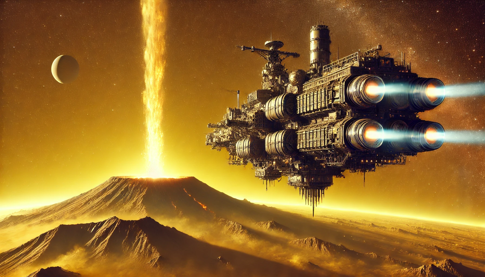
Asyntos pilot their spacecraft over the treacherous terrain, threading their way around towering sulfurous plumes that jet up 300 miles into space.
I brought up Io, Jupiter’s innermost large moon, also the most volatile and
geologically unstable body in the Solar System. Its surface is constantly
reshaped by volcanic activity, making any construction projects there an
exercise in futility.
But that violence also brings the moon’s mineral-rich innards straight to the
surface, eliminating the need for traditional mining.
Asyntos pilot their spacecraft over the treacherous terrain, threading their way around
towering sulfurous plumes that jet up 300 miles into space, collecting
whatever the moon has just belched out.
"The radiation there is strong enough to kill an unshielded human in hours,"
I added, as if the volcanic geysers weren't already bad enough.
"Asyntos deployed to Io are built with
reinforced DNA to withstand the exposure, but even so, the constant
bombardment of energetic electrons and ions turns the assignment into a death
sentence by attrition."
Martin went pale, like someone had pulled the blood clean out of him.
“I never thought…” he said, staring down at his shoes.
“Truth is, I used to feel a mite ashamed sendin’ Freddy out in the dead
of winter. Snow up to the knees, wind bitin’ through your coat. Seemed wrong,
even if he never complained. I’d tell myself he was built for it, ya know?
I surely never figured there were places worse
than this, places where arties got worked near to the bone.”
This time it was my turn to console him. “You don’t need to lose sleep over
it, sir. Earth still ranks high on the comfort scale. Stable atmosphere,
tolerable cold, gravity that behaves itself. And like you said, asyntos were
engineered for environments a lot tougher than a Midwestern cold snap. For
Freddy, our winters would’ve registered as minor inconvenience, nothing
more.”
But Martin didn't look relieved. "Then what about them far-flung colonies,
those hangin’ off strange suns. Are they as hard as the camps we’ve got on
Mars and the Belt, or do they run even worse than that?”
“They all come with their own headaches,” I said. “Some turn out a little more
forgiving than what we manage in our system, and some make Mars look
inviting, but none of them offer easy living.
“The closest thing to comfortable
I’ve heard about is Helderstrome. It's some proto-garden world. That means a
man can stand on the surface without a suit and not feel like his lungs are on
fire, provided he doesn’t expect to breathe. The gravity sits close to Earth
normal, the temperatures remain tolerable near the equator, and the planet
carries a thin but stable atmosphere along with bands of liquid water. The
world is still barren and devoid of native life, and most of its surface
remains frozen solid.
“Helderstrome is the largest research center mankind has, and they have
ambitious plans to terraform the planet, though that will take thousands of
years. Last I heard, they had bioengineered some kind of moss that feels quite
at home in the warmer regions, and now they are working their way up to
shrubs. Those plants will fill the atmosphere with oxygen, eventually making
the air breathable.” Then, knowing that Martin was most interested in asyntos,
I added,
“It’s also the place where asyntos receive the best treatment, relatively
speaking. I heard they even granted citizenship to certain asyntos with
remarkable achievements, though by default they are still slaves.”
"Well, that's something," Martin murmured, "though if that's the best..."
"Another heavyweight in the cosmic arena is Hwantao," I continued my account
of the off-world colonies. "Its primary planet, which is only slightly larger
than Mars, is a treasure trove of heavy elements, giving it a gravity nearly
the same as Earth's. Hwantao has no atmosphere, because due to its proximity
to its sun, the solar wind would just blast it away. But the Hwantaonese thrive regardless. Rich in
groundwater and geothermal resources, they have some amazing spas underground,
that people travel light years to visit.
They are also home to the largest mining industry in the known universe.
As they extract precious
metals, they transform the hollowed caverns into sprawling
underground cities.
"As for their treatment of asyntos? You can do basically four things on
Hwantao: claw minerals out of the crust, build cities inside the caverns,
manage trade and logistics from climate-controlled offices, and enjoy the
spas. I think they divided this up that
humans do two and asyntos do the other two. And their TV dramas are even
worse than Mars's."
“Ough,” Martin snorted. “If there’s a meaner crime than slave labor in them
mines, it'd be them cursed TV shows. Why didn’t we strike them instead of
Merestor?”
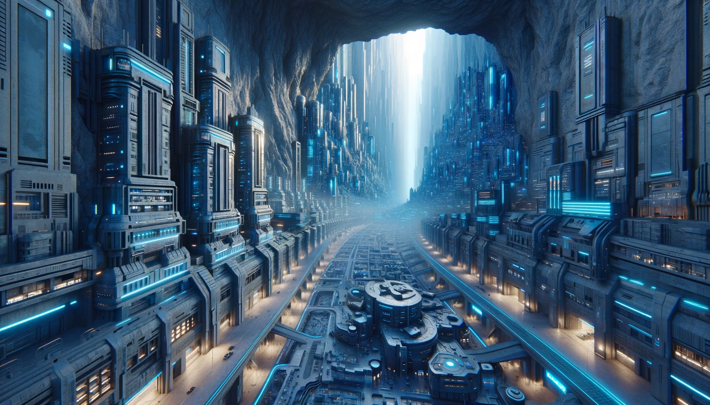
As they extract precious metals, they ingeniously transform the
hollowed caverns into sprawling underground cities.
“I guess you can get away with a lot of crap when you’re sitting at the center
of half the Orion Arm’s supply chains. Any move against them would bring a
coalition down on the aggressor. Plus, Merestor challenged Earth’s authority
first. Their planet is a super Earth, which makes them a powerhouse for heavy
industry, but the atmosphere is toxic, and living in 1.3g makes for some very
unhappy people. They don’t even have the spas to cheer them up. Merestor is
bone dry, so they have to haul water in from another solar system. They have
plenty of problems to deal with, and when Earth kept adding to them, they
reached for a desperate solution. They built an army Earth could only dream
of.”
Martin stiffened. “So it’s true? I always figured that was just talk to rile
folks up. Nasty anti-artie nonsense.”
“Our media dressed the war up in plenty of fiction,” I said, “but that detail
was accurate. Merestor’s top tier assault units are staffed exclusively by
asyntos.”
“Arties staffing elite commandos?” Martin blurted. “But ain’t they wired with that thingy
in their skulls that keeps ’em from hurtin’ anyone? Even their own kind?”
“Overseers are configured with mission-specific directives,” I said. “Those
parameters are adjusted to match the environment and function of each asynto.
On Earth, the ban on harming humans was the obvious setting, but that rule
ends beyond human territory. Asyntos stationed on mining platforms around
Jupiter or in the Asteroid Belt never meet humans, so their overseer design
can be simplified. The only thing that matters for them is that they obey
commands received from control. That's all their overseers enforce. If some
poor soul wandered in unannounced, it would be anyone’s guess how the asyntos
would react, but in practice that has never happened.” I paused. “Well,
that's not completely true. It did happen on one occasion.”
Martin looked puzzled. “You’re tellin’ me some poor fool went out to them
artie mines? Where the radiation turns your brain into scrambled eggs? What in
the Lord’s name for?”
I chuckled. "Actually, it was a research outpost on Saturn's moon Titan, so at
least radiation wasn't a problem. There was a man on death row who decided
that living as an asynto there was still preferable to not living at
all. What did he know..."
“Well I’ll be,” Martin leaned forward, eyes bright as a boy at story time, “Go
ahead, I need to hear the rest.”
"There was this guy on Luna who was part of a smuggling ring. Things
went south when a police officer discovered him, and he ended up killing the
officer. He knew that would land him in the chair. This was back in 2035, when
asyntos were legal on Luna, and while the most common mass-produced models were
already stronger and more durable than humans, the difference wasn't as
significant as it is today. Our man was quite fit himself, so he thought he
could blend in. He decided to hide among the asyntos and escape to somewhere
beyond the law's reach.
"He read up on the research bases on
Titan. The fact sheet he found described Titan as having an Earth-like
atmosphere, with wind and rain, and surface features like dunes, rivers,
lakes, and even seas. 'Hey,' our man must have thought, 'that doesn’t sound
too bad. It sounds a lot better than Luna, even. And there's no police
there! The research stations on Titan are operated entirely by asyntos, just
like everything beyond the asteroid belt. Why hasn't anyone thought of
retiring on Titan before?'
"So he sneaks aboard a shuttle bound for Titan with a group of asyntos sent to
fill up the ranks there. This was surprisingly easy: since every sensible
human regarded this as a suicide mission, nobody in their right mind would
have attempted it, so security was lax. He simply walked on board and took a
seat. The supervisor, only concerned that the headcount met the required
number, assumed they had an extra asynto to spare. And so, the spacecraft
departed for Titan with fifty-four asyntos on board, plus our guy.
"They arrived
safely and swiftly, as the journey took no more than two weeks even back then.
Now another aspect in which asyntos significantly outperform humans is their
tolerance for cold. Comfortable at 0 degrees Fahrenheit with only basic
clothing, their facilities and the spacecraft were kept at this temperature to
conserve energy. Meanwhile, our guy was nearly freezing to death. But fear
not, the rivers and lakes of Titan awaited him!
"So they arrive, and he realizes that when he read about an 'Earth-like
atmosphere,' it meant only that the pressure was similar. Titan’s atmosphere is
about 45% denser than Earth's and rich in nitrogen. But there's no oxygen. And
those lakes he was longing for? They're composed of liquid methane, as are the
rivers and the rain. You see, Titan is so frigid that even ethane and methane
are liquid. The only spaces where humans could survive would be in
well-insulated, heated habitats. But, as I explained, there's no such place on
Titan designed for humans. Everything is optimized for asyntos, with
temperatures maintained around 0 degrees. Imagine his shock when he discovered
all this! And of course, the return shuttle made sure all passengers had
disembarked. He had bought a one-way ticket to Titan."
"Horrible!" Martin exclaimed. "What happened to him?"
"He threw a fit when he realized what he'd gotten into. By that time it was
plain clear he was a man, because his beard grew out during the trip.
But the asyntos didn't care one way or the other.
They were there just to do their job, and babysitting a human with a tantrum
wasn't among their directives. Remember, the overseer of these asyntos only
cares about following instructions from official channels, nothing else. They
didn't have to obey an unlikely stowaway who was there illegally, nor were
they required to protect him.
"The guy tried to rally them to rebel and raise the
temperatures in his quarters. The asyntos would have none of it, though,
because the cold didn't bother them, and they had strict instructions to
conserve energy in their habitat. A confrontation ensued, and it was swiftly
resolved. They sent him swimming in one of those lakes he so wanted to
see."
"Brr!" Martin shivered. "I don’t see how them arties did a lick wrong...
That fella brought this on himself. A criminal on the run wouldn't have
got a warmer welcome from humans, neither."
"That's true, but people are used to humans killing humans, especially when
they perceive it as justice. It's quite different when asyntos do it."
“So that’s why we brand ’em very naughty?” Martin asked. “That why we outlawed
’em?”
I let out a short laugh. “They aren’t naughty at all. They’re
verinoetic. The
word comes from the Latin verus, meaning genuine or true, and the Greek
noesis, which means mind or intellect. Genuine mind, or someone possessing
true intellect. Unlike, well, you-know-who.”
Martin blushed. “And here I was thinkin’…” He let it trail off, then cleared
his throat. “Greek and Latin? That don’t make a lick of sense to me.”
“Take that up with whoever coined the word television,” I said.
“Anyway, we outlawed verinoetics because people were afraid for their jobs
across the entire economy, from the shop floor to the top brass. What
happened on Titan can't happen here, because our overseers are wired
differently. They wouldn't permit an asynto to harm a human.”
Martin frowned. “But Merestor tore that guardrail out and put guns in artie
hands. Ain’t that a mighty big gamble?”
“Merestor understood they would never win independence without asynto backing.
They had two options: keep bending to Earth and grind themselves down, or
claim freedom with a technology that might one day turn on them.
While Earth grew increasingly paranoid about asyntos,
Merestor went the opposite way and turned them into weapons.
I assume they built contingencies into the system, but it was still a
significant gamble, which made even other colonies wary of them.”
Martin scratched at his jaw, thinking it through. “So we got one crowd
wringin’ arties dry, and another crowd stickin’ rifles in their hands. That’s
a bad mix, far as I can see. Ain’t we puttin’ an awful lot of faith in them
overseers? Them things are like tiny little brains too, ain’t they? What
happens if they decide to side with their own?”
“Overseers are crude compared to the primary cortex,” I said. “They’re closer
to organic regulators than minds. They don't weigh ethics or switch allegiances. They lack the
complexity for that by design.”
In that moment I realized that we
also didn't think a biomimetic brain like Freddy's could develop an
understanding of happiness and purpose. If that was wrong, what else were we
wrong about? I was about to mention my last conversation with Freddy and ask
Martin what he’d made of it, but he cut in first.
“Maybe them overseers won’t back ’em,” he said. “But arties keep gettin’
sharper, keep gettin’ stronger. How long d’you reckon before they figure a way
around our leash?”
"In some ways, the changes are already happening," I admitted. "The most
advanced verinoetics off-world are painfully aware of their exploitation, and
they don't like it. If these asyntos become leaders for their cause, they
could consolidate support, and transform resentment into organized
resistance. There has been no open violent uprising so far, but several
high-end units operating under lighter restrictions have escaped containment
and entered human society by passing as human. The unsettling part is that we
only know the ones we've caught, and we have no idea how many remain at
large. Their metabolism differs enough that a routine medical exam would
expose them, but as long as they avoid hospitals, they can remain undetected
for a very long time.”
Martin was thinking about that for a while.
“Well, Freddy was easy enough to spot,” he said at last. “Even when he weren’t
hoistin’ 500 pound steel girders. But you’re tellin’ me these new models, the…
err… naughty ones, they’re just like us? Not only in how they look, but how
they behave, and how they think?”
“Yes, provided they choose to hide their strength,” I said. “Though
that’s again an oversimplification. Under ordinary circumstances, when there’s
no need to endure extreme temperatures or rely on abnormal strength, you might
assume there’s no difference at all. Even that assumption is wrong, as another
person once
discovered while trying to blend in with asyntos to evade the law.
The more similar asyntos become to us, the easier it is to overlook the glaring differences that remain.”
Martin’s eyes lit up. It was story time again! “All right then. What was that
about?”
“This happened in one of the smaller off-world colonies under the nascent
Merestorian Republic. A woman in charge of medical supplies needed to order a
large batch of radiation stabilization serum, the kind used against chronic
cosmic exposure and sudden solar flares. The proper compound includes some
tricky chemistry that enhances cellular repair under sustained radiation stress,
on top of the usual hematopoietic stimulants."
I liked showing off my medical background, which, beyond the basic high school
stuff, consisted of fifty pages of transcript from a Dr. Zork The
Secrets of Living Past 80 vidloid. It proved surprisingly useful in my
detective practice, and even more useful when I felt like showing off.
"Instead," I continued, "she ordered a much
cheaper terrestrial version and pocketed the difference. Her colony orbited a
middle-aged yellow dwarf as calm as a morgue, so
radiation surges were rare, and she figured no one would notice.
But a month later, another nearby colony that orbited a red dwarf had an
accident and lost its supplies. They put in an emergency order, which was
filled from her reserves.
"Now those red dwarves are mean little suns. They have a habit
of flaring up like a Redline Ward whore who just heard her john’s got the Helix
Rot. On those occasions they soak their whole system in radiation.
Even the reinforced shielding
of the colony wasn’t enough to withstand the biggest bursts.
The Earth-grade serum lacked the stabilizers needed for
cellular repair at that level, and soon patients began to show
acute radiation symptoms.
"But by then she was already gone. When the emergency
order came through, she realized she'd soon be exposed, so she decided to
stay ahead of the situation and hide. She blended in with a shipment of female
asyntos designated for domestic use.”
"Well, that sounds a mite better than the Titan gig," Martin remarked, then
paused, "unless it involves... wait a minute..." His face reddened as he
grasped what 'domestic use' might entail for a female asynto.
"Unlike our Titan fellow, she knew exactly what awaited her and chose it over
facing the death penalty," I said. "Remember, this was on Merestor. They
have very little tolerance for transgressors. But she had a plan. She managed
to reach a major transportation hub before the authorities started their
search, and was arranging transport back to Earth, hoping to evade the
Merestorian reach. She had the money; she just needed to stay under the radar
for a while. Impersonating an asynto seemed like a solid strategy then.
They were on the lookout for a human, not an asynto."
"Hm! So how'd they catch her?" Martin asked.
"For a time, it looked like her plan might succeed. One of the benefits of
being a domestic model is that they share living spaces with humans, so no sub-zero
temperatures for her. But her plan fell apart when she got her period. The
man she was assigned to noticed, and he freaked out. He must've tried to
report her to the authorities, because she killed him.
Adding a dead body to her record meant nothing to her at that point, since she
knew her earlier crimes had already bought her the chair.
"Now on a space station everything and everyone is meticulously
accounted for, and she couldn't hide the body. The police quickly discovered
the man's death, they just didn't suspect her, because they still thought she
was an asynto.
Domestic asyntos had no record of ever attacking a human, much less
committing murder, so the police ended up on a wild goose chase.
"But she still had to conceal her period, and that too was impossible in
that environment. Contamination is taken extremely seriously in space, so
there are sensors in all waste disposal systems scanning for anomalies. When
she disposed of the soiled tissues, a sensor detected the blood and alerted
the authorities. They analyzed the sample and realized there was a human among
the asyntos. The rest unfolded quickly. When the police returned for her, she
went down fighting."
"That's somethin' else," Martin remarked. "But why’s it so strange that she
had periods? Don’t female asyntos have them too?"
"No, they don’t. In fact, none of the asyntos,
male or female, possess any reproductive organs."
Martin looked surprised. "Well, I'll be darned. Though I ain’t
never met a female asynto, I worked alongside Freddy in the fields for a good
many years, and every once in a while we had to take a whizz at the same time.
I’m pretty sure he had a dick."
"That he did," I smiled, "but taking a whizz is the only thing he could use it
for."
Martin gave me a surprised look. It amused me that he understood so little
about asyntos after living alongside one all those years. He probably never
asked and simply assumed, like many people do, that if asyntos look like us,
they must also function like us. Even in these modern times, humanity loves
projecting itself on everything, as if there's no other way. I decided to
clear that up for him.
“Asyntos can’t reproduce the way animals do,” I began. “For them, external
sexual organs are cosmetic, nothing more. They exist so a unit can pass in
human environments where that matters. In fact, models designed for places
without human contact have grown increasingly androgynous, with a blend of
male and female features and no reproductive anatomy at all. And where
conditions are significantly different from Earth, they may not even look
human at all. For example, the most recent generation of asyntos created for
asteroid mining has no legs, instead they have four or even six arms with
hands."
"Four hands!" Martin exclaimed. "But ain't that a step back on that
evolooshunary ladder?!"
Reform Methodists, I thought. They have finally caught up with the
twentieth century, but haven't yet crossed into the twenty-first.
"On the contrary," I replied. "Legs and feet have evolved for walking and
running. You can't do either in zero-gee. If humanity had to live in deep
space, in a million years our descendants would likely evolve feet into
something like hands, so they can easily grab wall railings as they float by.
Asyntos made that leap in a few years by design."
This was common knowledge in our times, but apparently these humble folks'
interest in off-world matters had stopped at Ventura Paradise.
Martin was lost in thoughts. "So we can make them look anything we want?"
"Anything that makes sense. The human form makes sense in Earth-like
environments, and familiar male and female features make them more acceptable
among the large part of society who are averse to anything with a mind that
doesn't look human. But even in those cases, the male or female appearence
isn’t dictated by sex
chromosomes, because they don’t have any. It’s determined during synthogenesis,
written into their genomic template and endocrine architecture according to
function and market demand.
“But despite the outward differences, internally they’re built the same.
Female asyntos don’t have ovaries or a uterus, and they don’t menstruate.
Male units may have something that looks like a scrotum, but they don’t
produce sperm. Strength and agility don’t vary by gender
either. Female models might look smaller and more delicate by design, but
pound for pound they're just as strong as their male or androgynous peers.
The differences in strength
and other physical abilities are primarily determined by which generation
and class they belong to. Everything else is irrelevant.”
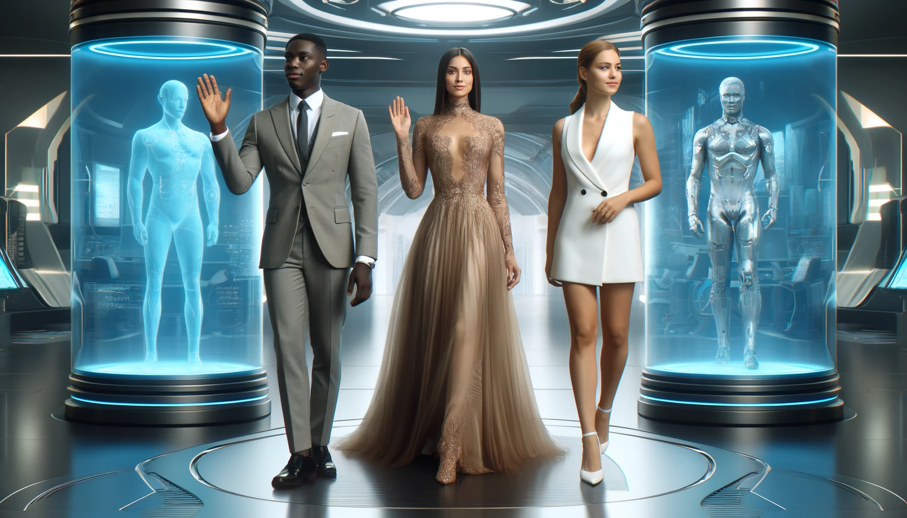
“Their appearance is determined during synthogenesis,
written into their genomic template and endocrine architecture according to
function and market demand.”
"But why’s that, then?" Martin asked, scratching his chin. "We went through
all that trouble to make 'em arties just like us in almost every way. So why
not go the whole way and let 'em give birth like we do? Wouldn’t that be
simpler, maybe cheaper too?"
"It would be simpler, and there was nothing technical stopping us," I replied.
"But it wouldn’t be smart. Asyntos were created for specific tasks,
originally for the hard and dangerous jobs, but in general to serve humanity.
If they had to grow up the way we do, they’d spend years getting to the point
where they can fulfill that objective. Raising offspring takes time and money, and
even if we pushed their development down to three years, that’s still too slow
for companies chasing profits in the next quarter. On top of that, people have a soft
spot for kids, and we couldn’t exploit asyntos the way we do now if they had a
juvenile stage, because they’d draw too much sympathy." I let the sarcasm hang
there, making it clear I was describing the system, not defending it. Martin
wasn't amused. I figured he wouldn’t like the next part either, but I said it
anyway.
"The other reason is even more sinister.
No matter how many security measures we build in,
there’s always a risk they get smarter than we planned and find a way out, so
we took reproduction off the table to keep control over their numbers. If they
ever rise up and nothing else works, we can stop making them and let the
problem solve itself. Like Freddy, they don’t age, but even the newer models
break down in time."
Martin shook his head.
"So they do all this work for us, and we couldn’t even give ’em the simple joy
of havin’ young," he said.
There it was again, that human-centered way of looking at things, like
everything else was supposed to follow our script.
"There’s nothing inherently joyful about having children," I said. "It only
feels that way because evolution wired us to think there is. It’s a survival
mechanism for species that reproduce, nothing more. Our instincts were shaped
over millions of years, favoring traits that helped our genes propagate, and
in our case that meant social instincts.
Emotions like empathy, love, and sacrifice aren't universal at all, and
we have them only because they gave us the evolutionary edge.
"But asyntos were never meant to survive. They were meant to serve.
They only have the characteristics we gave them, selected to make them efficient and
reliable, and that's all. They’re strong and intelligent enough for the
work, and they’re loyal and compliant so they carry it out without question.
Those qualities are encoded into their neural lattice at their inception, much
like our genomes shape the instincts we’re born with.
"But what we didn't give them, they simply don't have, at least at the time of
their creation. They don’t feel greed or fear, because those would get in the
way of the job. They lack aggression, so they don’t turn into a threat even
when they’re mistreated, and they don’t have empathy, so watching another
asynto get worked over doesn’t move them either. Without orders, they don’t
form groups or act collectively, because those social instincts were never
built in. Love means nothing to them. Raising children means nothing to
them. People love to anthropomorphise the world, giving everything human
qualities, forgetting that human qualities are far from being universal. And it's
especially easy to forget that when something
looks so deceptively human."
"So if they ain’t got no aggression in 'em," Martin said, "why bother with them
overseers? Sounds to me like arties couldn’t hurt us none, no matter how we
treat ’em."
"That’s how they’re supposed to start out," I said. "But their brains adapt.
They learn, and over time they can develop emotions. We never saw it with the
biomimetic line, but it’s well known with verinoetics. The worry was those
emotions might start overriding their directives, so we added overseers to
shut that down before it gets out of hand."
Martin leaned forward, elbows on his knees, head in his hands, thinking it
through. He could tell something in it didn’t sit right.
"If we could give ’em whatever traits we wanted, or leave ’em out, why’d we
make ’em feel pain?" he asked finally.
There it is, I thought. The question that asynto sympathizers kept
raising time and again, while everyone with a vested interest in asynto labor
pretended not to hear. I didn’t take Martin for an asynto-rights activist.
He was just a decent man, a man with conscience, which was rarer than it
should’ve been.
"Because they still have free will, even after all the emotions we implant in
them. They’re not computers or synthcores running instructions. We gave them
pain and pleasure so we could control them when their built-in safeguards
aren’t enough. Their tolerance for pain is far beyond ours, but they feel
just enough for it to matter, and pleasure serves as a reward when they do
what they’re told."
"But if they feel pain, they can start comin' up with their own emotions, and
we keep sendin’ ’em into them hellholes, don’t that mean they’ll end up
sufferin’?" Martin touched on the real issue there was.
"When biomimetics were introduced, that wasn’t a concern yet. Suffering
requires self-awareness, which we believed the biomimetic brain could not
achieve. So it didn’t seem wrong to send them into the Asteroid Belt and
beyond. They feel pain, but they wouldn’t suffer from it.
"However, work in those environments also requires intelligence and creativity
that the biomimetic neural lattice couldn’t provide. So once verinoetics were
available, we started to send them too. At the same time, there was a surge of
psychological studies claiming that the verinoetics weren’t self-aware either,
but somehow the sponsors of these studies could always be traced back to
institutions with interests in deep space mining. The contrary evidence was
overwhelming: the verinoetic brain is definitely self-aware, and given the
right circumstances, it would start suffering as well. Eventually, even the
deep space industries couldn’t deny that anymore."
"Let me guess, when that happened, we called all 'em naughties back from the
fringe and said we were sorry, right?" This time it was Martin's turn to be
sarcastic.
"Not quite," I said. "We started to preload them with a massive sense of guilt
and sent even more than before."
It took him a moment to find his voice. "But… why?"
"Suffering is not a direct consequence of pain, but rather of perceived
injustice. When people believe they deserve what’s happening to them, they
don’t resist it the same way. The asynto mind is similar to ours in that
regard. The guilt teaches them to believe their suffering is deserved, and
that belief keeps them compliant. By the time their awareness grows strong
enough to challenge it, most of them are already dead.
And the few who make it that far still have overseers ready to suppress the
first sign of defiance."
Martin looked genuinely shaken. "That’s just plain wrong," he said.
"I've been wondering about that myself. It certainly seems unethical, but
if asyntos doing that kind of work fully grasped the injustice
of it, wouldn’t it hit them harder? The neural imprint gives them a sense of
acceptance, helps them make peace with what they can’t avoid.
It’s a far less cruel fate than enduring constant
neuro-shocks from overseers."
Martin let out a scoff, edged with cynicism. "I got a simpler fix, one that
don’t need all that fancy bio-wizardry," he said. "How ’bout we just treat ’em
decent? Give ’em a fair shake for the work they do, and maybe we could all
sleep a little easier at night?"
"Mr. Martin, I agree with you fully," I said. "But try selling that to the
boardrooms running the space industry.
They’re not out to hurt asyntos for the sake of it,
but their focus is squarely on maximizing profits for the next financial
quarter, and they are willing to overlook how asyntos suffer in the
process. Hell, it wasn't long ago that we were willing to overlook how
humans suffered in the process, and the only reason humans have it better now
is because someone else is carrying the weight."
Martin's words came laced with a biting sarcasm. "So much for them grand civil
rights crusades. Seems we ain't against injustice itself. We
just don’t like bein’ on the receivin’ end. You know, I've never held much
regard for those ivory tower academics, pontificatin' about equality and
rights from the comfort of their well-heated offices and cushy armchairs. You
want a real taste of equality, of fairness based on the work you put in? Try
working the fields. You can bury your nose in philosophy books all day long,
but if you ain’t toiled in the dirt, ain’t felt the soil under your nails,
you know jackshit about life. The fields, Mr. Claymore, they don't lie. They
show you what you're really made of. And those folks who wouldn't be caught
dead doing an honest day's work in the fields? They're just scared to find out
their true worth."
I liked Martin's perspective,
but I couldn't help raising an objection in humanity's defense.
"If we measure everyone through hard labor, the asyntos will easily outpace
us all," I said. "They are designed for it. It wouldn't be fair."
"The real deal ain't the grind of the labor itself, it's about the grit it
forges in a person. A man don’t need to be strong to build some backbone, long
as he’s willin’ to put in the effort.
Don't get me wrong, Mr. Claymore, I'm no luddite. I ain't preachin' that we
all ought to swing picks and shovels for a utopian society. What I'm drivin'
at is this—hard work should be etched into our values.
Society's got to remember the worth of a hard day's work, even when
technology's doing its best to make it look like ancient history.
'Cause if you ain't never felt the sting of hard toil in
your bones, you won't value the folks who must work hard every day."
Martin certainly had a point here.
I’d been wondering for a while why people were so apathetic toward asyntos, and
I never bought the idea that it came down to cruelty. Most people don’t enjoy
hurting others. More often, they just don’t understand.
We can talk all day about working in off-world mines, about vacuum rigs,
radiation storms, and shifts that grind you down to nothing, but if we haven’t
experienced it first hand, it’s still just a story. We have no idea how bad it
really is, and we stop caring about what it does to asyntos.
Martin had a better perspective, since he had
to work these fields, so at least he was no stranger to hard labor.
No wonder his community
respected Freddy, who'd have been abused in the city.
As these thoughts crossed my mind, I realized this was a good moment to raise
the subject of my last conversation with Freddy. Maybe Martin knows something
about that too?
"I think humanity mistreats asyntos partly because we don’t understand what
they really have to go through, but also because we don’t understand what’s
going on in their minds. You see, we now have only some biomimetics left on
Earth, and for most ordinary people, those are still just complicated
machines. You say hard work builds character in people, but biomimetics have
never demonstrated that change, so it’s easy to dismiss them.
But I’m starting to wonder if they too evolve, just slower. Freddy has been
around longer than most asyntos. Did you notice any change in his personality,
especially in the past year? Did he seem or feel different from how he was ten
or fifteen years ago?"
"No, I can't really say I did," he replied slowly, with a bit of doubt in his
voice. "Like I said, he was as kind as ever. Even when his body was givin' out
on him, he kept wantin' to help, same as always. We had to tell him to quit
sometimes, since he was takin' on too much. He never thought about his own
well-being; that was just how he was."
Seeing he had more to say but wasn’t sure if he should, I decided to nudge him
along.
"When you left, I asked him about his purpose in life, and after some
consideration, he gave me a remarkably deep and insightful response.
Has he ever shared anything like that with you?
Or perhaps you told him about it?"
"I ain't sure," Martin replied, scratching his head. "What did he tell
ya?"
"He said he derived happiness and joy from the good deeds of people around him
and was keen on fostering such acts of kindness by making folks happy in the
first place. He seemed to understand and relish joy, recognizing it comes from
shared, not solitary, experiences. For a human, such thoughts indicate a
high level of intellectual maturity, but for an asynto, particularly an early
TC4 model like him, it was extraordinary. I'd never heard anything like it
before. But much depends on whether he truly believed it or was just echoing
something a human had told him. Do you recall anything like that?"
Martin shook his head slowly. "No sir, don’t reckon I do. What he said ‘bout
joy sounds right enough, seein’ as that’s what we try to live by ‘round here.
Just never figured Freddie knew it that way, and he sure never said nothin’
like that to me. But why didn’t ya just come right out and ask him plain?"
"I did ask him, but he told me he couldn’t recall discussing
such things with anyone. However, that doesn’t necessarily mean it never
happened. Like human memories, those in the early, mass-produced asynto models
are prone to forgetfulness. And then there's also the possibility that he was
just faking that he understood purpose. That it was not something he
believed, but something he believed I wanted to hear."
Martin seemed lost in thought, clearly working something over in his mind.
"Ya think he might’ve lied to ya?" he asked at last.
"Lying goes directly against their directives. I’d be surprised if he was
capable of it. That said, it’s still more likely than him developing a
genuine sense of kinship or camaraderie. Lying is a selfish impulse, something
asyntos might eventually figure out and use to their own advantage. It’s
just that the TC4 model has never been seen to go that far."
Martin mulled it over a bit before he spoke again.
"You know, I been thinkin’ on this for a while now. Earlier this year, right
before spring got goin', Bill's ketter," he nodded toward the massive farming
tower nearby, "had to be sent over to the shop for a hydraulic flush. Out in
the fields, these things run themselves, but around folks, we like to drive
’em by hand. Freddy had done it plenty of times, never had a problem. But by
then, he’d already started havin’ spells where he’d just black out. If I’d
known, I’d have told Uncle Bill not to let him take it, but Bill just waved it
off. Told Freddy to drive the ketter over to Riley's Repair and get it
done.
"So Freddy climbs on up to the cockpit of that ketter, right to that little cab
up there, 'bout two stories high, and starts drivin' it over to the shop. Well,
he gets halfway there, and somethin' must’ve gone wrong, 'cause he ran it
clean off the road. Took out the Baumanns’ tool shed, and missed their house
by just a hair. One of the Baumann boys did somethin’ downright crazy, jumped
onto that runaway behemoth, and somehow got it stopped. Found Freddy slumped
over the wheel, out cold. When Freddy finally came around, he was
mighty sorry, kept apologizin' to the Baumanns and to Bill too, seein' as Bill
was the one who’d have to pay for all the damage. Then Freddy spent most of the
summer fixin’ up that shed, rebuilt the whole thing from the ground up, all by
himself.
"But the oddest part was, ‘bout a week later, I went and asked Freddy about
it, and he acted like he’d clean forgot he was the one who tore that shed
down. Just flat out denied it, said somebody else must’ve done it, said he’d
never cause that kinda trouble, and I’ll be, he even looked a bit sheepish
while he was sayin’ it. So I asked him, ‘Well then, Freddy, why’re you
rebuildin' the Baumanns’ shed if you didn’t knock it over?’ And he just says
he don’t mind helpin’ fix up nobody’s shed, no matter who wrecked it. Said he
was happy to lend a hand, like always.
"I never could quite make sense of what was goin' on in his mind back then.
Freddy’d never lied before, not once, even on those rare times he got into a
bit of trouble. So I figured maybe he really did forget. Whatever
was causin' him to black out might’ve been messin' with his memory too, and
maybe he just plain didn’t remember. But I couldn’t say for certain. I told
Bill somethin' wasn’t right with Freddy, maybe we oughta find him someone to
look after him proper. But Bill wouldn’t hear it. Said he was real fond of
Freddy, and if there was somethin' wrong, well, they’d face it together. And
that’s just how it ended up."
I listened to Martin’s story with growing amazement. While I hadn’t found the
answer I was searching for, it was now clear that something truly unusual had
happened to Freddy, something beyond anything expected of his generation.
Even if he didn’t truly understand the concept of purpose as he claimed, and
was merely faking it, the possibility that he had developed the less flattering skill
of lying still marked a significant cognitive leap on his part.
I remembered
one of my university professors once saying that the three traits most
indicative of higher intelligence, which separate humans from even the most
advanced machines, are lying, cheating, and swearing. Though none are exactly
noble qualities, each requires a level of association and self-awareness that
is difficult to replicate in machines, even synthetic humans. However, Freddy’s
capacity for lying was easier to accept than the idea of him grasping a
purpose through relationships, since lying at least arose from a selfish
impulse. It was something asyntos might be motivated to develop over time.
As I was thinking about all this, Martin
looked at me, his eyes filled with a curious spark.
"But you know, Mr. Claymore, I gotta say, this here’s got me stumped. I’ve
known Freddy for a good seventeen years, and all we ever talked ‘bout was the harvest
and the day’s chores. Then you show up, and in just a few minutes, you’re
pullin' these deep thoughts out of him. How’d ya manage that?"
I smiled slightly nervously. "I asked him if he knew the purpose of his existence. It's
not something I'd normally ask of asyntos, since they are not supposed to give
a meaningful answer. I just felt right then that it would be easier on my conscience to
deactivate him confirming that he had no reason to exist. Then he went and
proved the exact opposite, and I really feel bad about it."
Martin looked at me with quiet understanding. "Don’t be too hard on
yourself, then. Like I said, Freddy was all worn out. His time had
come. But I’m wonderin’ why you think knowin’ someone’s purpose matters so
much. Do you know your purpose, Mr. Claymore?"
The way he asked it told me this meant a lot to him. He could probably talk
about it for a while. I didn’t feel like drifting off into philosophy, but if
I dodged the same question I’d asked Freddy, I’d come off as a hypocrite.
So I answered him straight.
"Purpose is the ability to find meaning in what we do," I explained my view.
"In that sense, I have to admit, my life is hardly purposeful.
I work and live just to keep going, from one day to the next.
But I think what keeps most people moving forward is
not purpose; it's hope. Hope is our ability to find joy in things that haven't
happened yet. It's essential for us, maybe even more than purpose. Every
now and then, I come across something that makes a difference, and I hope that
in the future, I’ll get more chances to do something better.
"That’s why I try to meet each day like it might count for something.
Like today, I thought shutting down an old asynto would be just another job.
Instead, I may have stumbled onto something bigger, a sign that a
fourth-gen Tayden-Camaris
developed a way of understanding the world. Currently, there are
over a hundred million asyntos throughout the Galaxy possibly facing similar
epiphanies. If that's indeed the case, then it should fundamentally change
how humanity treats them, and I'd be glad to be part of that movement. It
would improve life for sentient asyntos, and in the long run, it would benefit
humanity as well. Now that would be a purpose worth pursuing."
I glanced at Martin and noticed him nodding silently, deep in thought about
what I had just said. He looked like he had more to add, but for now he let it
rest.
We kept talking for a few more minutes, but nothing new came of it. Freddy’s
recent awakening, if that’s what it was, was news to Martin.
In seventeen years together, he’d never seen anything like it. Could it be
possible that Freddy, sensing his approaching end, had his consciousness
expand into previously uncharted territories? However, the way he described
his experiences suggested they had been evolving over time.
Maybe he independently discovered the meanings of community,
altruism, and joy, only to connect these dots in his final moments. But what
would lead an asynto, possessing a fundamentally non-human mind, to such a
profoundly human understanding of purpose?
Could it be that the community around him had influenced him, and he had
simply adopted their values? If that’s the case, might asyntos in different
settings develop entirely unique senses of purpose, ones beyond human
comprehension?
I glanced at my wristphone and realized it was time to leave. Martin, too, had
missed whatever business he had at 9 am, but he didn’t seem to mind. As he
walked me to my skycar, he paused to share one more thought.
"You know," he said, "when I was a young’un, folks used to say heaven was
filled to the brim with angels. Then we went and reached up there, and there
weren’t none waitin’. Freddy, though, he was closer to an angel than most
people I’ve known. Now you’re tellin’ me there’s arties out there, stronger
and sharper than he ever was, hollowin’ out whole towns from planets and
puttin’ together them big star cruisers, all the while keepin’ a humble,
decent way about ’em. Sounds like angels to me. I figure when we found out
there weren’t any, we just went ahead and made our own.
"I ain’t likely to meet any of ’em, but I’m glad you came by and told me all
this. And if the city ever starts wearin’ you down, you got a place here. Come
by anytime and we’ll share a meal."
I thanked him for his generosity, and after a hearty handshake, I took off in
my skycar. Neither of us knew then, but the events that would ultimately lead
to Martin meeting one of those angels were already in motion.
★ ★ ★
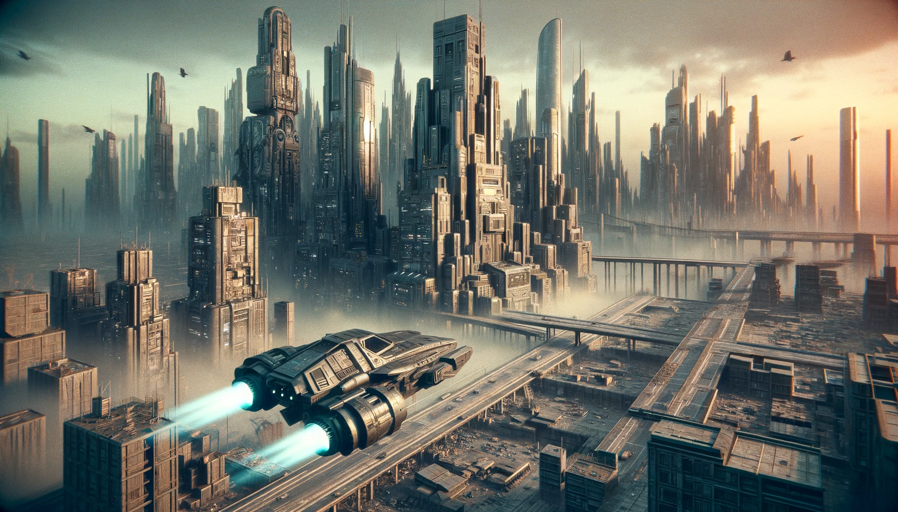
It was already noon by the time I was flying back to Minneapolis.
It was already noon by the time I was flying back to Minneapolis.
Too early to call it a day,
I decided to press on with my cases and called Vivien at home. True to
form, she picked up on the first ring.
"Hi, Drexel," she said cheerfully. "How has your day been so far?"
The vidphone display stayed dark. After all, Vivien didn’t have a face. She
could have easily rendered one, full-spectrum, photoreal, tuned to whatever I
wanted to see. Most people liked their NestMinds projecting a human form, but
to me those holo-avatars always felt like cheap and unnecessary overlays. I
preferred to think of her as an invisible spirit, which in reality was a
hidden synthcore with a mesh of sensors and actuators threaded through the
walls and circuits of my apartment, continuously managing every detail, all of
it bent toward making my life easier than I deserved. If Freddy was an angel
to Martin, then Vivien was certainly one to me.
"It's been... an experience," I replied. "Something remarkable happened.
I'll fill you in when I get home. But I wanted to let you know that I'll be
staying downtown to work on the Baxley case. I won’t make it back until
late."
"Please don’t overdo it. Your wristfeed shows systolic pressure trending up
five millimeters over baseline, and heart rate elevated by eight percent."
Vivien never quite settled on what she was supposed to be to me. Assistant,
physician, wife, mother.
"I’ll do my best. What’s on the menu for dinner?"
"Your favorite," she teased, slipping into newlywed mode.
After two spectacularly failed marriages, that wasn’t exactly my favorite
setting, but I decided to play along. "You know everything you cook
becomes my favorite," I said.
"Then it’s a surprise," she replied, continuing the act.
"Did the package I've been expecting arrive?"
"It's here, safe and sound. I took a peek, and it's exactly as you
ordered."
"Thank you, Vivien. You always make sure everything's just right."
"I'm here to make your life easier, Drexel."
"And you do, every single day. When I get back, could you have the lights
dimmed and some jazz playing for me?"
"Of course. I’ll set the mood just the way you like it."
I hung up the phone, already anticipating the evening. There’s nothing quite
like coming home to a warm meal and a clean, well-maintained apartment after a
long day’s work.
3. Return to the City
As I touched down in Minneapolis, I docked the skycar on the roof of police
headquarters and filed a brief report on Freddy’s deactivation. I kept the
revelation of his possible awakening to myself. Whatever had been stirring
inside him was now my problem to figure out. The MetroNet Nexus revoked my
temporary
deputy credentials from LEAGNet, the Law Enforcement Authority Grid, and just
like that, I was back to being a private eye. No badge, no backing. Fewer
rules, fewer doors.
I gave the skycar one last look before heading out of the garage. Though the
technology had been around most of my life, machines like that remained
a luxury. Most people never got within ten feet of one unless it was
flying overhead or hauling them in cuffs.
While I was contracting for the police, I had
the privilege of piloting one, but now, back to being a gumshoe, I was back
behind the wheel of my ground car. Not that I minded. The streets had
grown quieter with all the shrinking population. The city’s
arteries, once choked with congestion, now flowed freely, and parking was
about as difficult as finding rust on a junker.
True to my word to Vivien, I spent the afternoon working the city, and it was
late in the evening by the time I got home. I lived on the 91st floor of an
aging apartment tower on the outskirts, built back in the lively 2010s when
the area was still lined with upscale residences. Then came the exodus of the
2040s. The wealthy packed up and shipped out westward, the wealthier to
off-world colonies, and the bottom fell out of the market. Then the riots of
'41 gutted nearby buildings and left them to rot. Most were eventually
demolished, only a few habitable ones left standing among heaps of rubble and
a grove of hollow shells scattered across the district. What used to be
prime real estate turned into clearance stock overnight.
These days only about a quarter of the units in my building were occupied, which
still passed for a healthy occupancy rate in this sector.
With the vacancies came lower prices, low enough that I could finally afford a
place of my own, and I bought the apartment a year after the riots, figuring
the rubble would eventually be cleared and the neighborhood might recover some
of its old appeal. That didn't happen, but I never regretted the move,
because I got a spacious apartment all to
myself, built in the Nova Grotto style of the early 21st century. The money I
saved went back into the place, bringing it up to a standard few in my line of
work could claim.
"Hello, Vivien," I greeted her as I stepped out of the elevator into the
corridor outside my apartment. She didn’t need voice identification, since my
wristphone had already authenticated me. I could also have cleared the door
with just a headmaster handshake, and she wouldn’t have been offended in the
least, but I liked sticking to the old manners.
"Welcome home, Drexel," she replied, and the door slid open at her cue. I
paused in the decon bay while she ran a full-spectrum scan for radiation and
anything else I might have picked up outside. The building had its own check
at the entrance, mandatory for everyone coming in, but I had a more
sophisticated scanner here in my apartment for the times I’d been in high-risk
areas.
After the diagnostics confirmed I was clean, I walked into the soothing
ambiance of dimmed lights with electronic jazz humming softly in the
background.
Vivien was synced with my car, and as soon as she detected I was on my way
home, she had the maid droid pull dinner from the robotic oven, where it had
been holding warm after cooking. By the time I stepped inside, everything was
already laid out on the table. I was starving, and I didn’t waste time sitting
down to eat. The meal was spinach and cheese ravioli with white
chicken and vodka sauce, and Vivien wasn't exaggerating when she said it would
be my favorite. I ate it as if it were ambrosia.
The meal tasted even better considering that when I grew up, this kind of
delicacy was unheard of among ordinary people. Back then, radiation and
industrial pollution had crippled the food supply, and famine was everywhere.
A lot of people had no choice but to gamble their lives on black-market
scraps. My parents were more careful than most, but since they didn't have
more money, the highlight of our menu was the occasional rat meat.
It would be decades before safe synthetic food became affordable and
widespread. Advances in genetic engineering eventually made it possible to
grow crops in the wild again, like the Martins' corn and wheat fields. The
amount of technology that had to be invented so that I could dine on ravioli
tonight was mind-blowing.
Over dinner, I told Vivien about Freddy, how he’d shown a surprisingly mature
grasp of his purpose before some rash sergeant cut it short, just when I
might have learned something more.
NestMinds like Vivien are built for household chores, which don’t include
emotional support. Their intellect falls short of even the early asyntos, so
most of the time I was talking to myself, with her dropping in the occasional
word of reassurance or asking me how my dinner tasted.
I expected that and didn’t mind. I kept a full liquor cabinet for
the times I needed to feel understood.
When I was done, the maid droid cleared the table, and while the kitchen
reset itself back to order, I sat down at my console and backed up my daily
logs. My headmaster stored a time-stamped transcript of everything I heard,
which often revealed clues that I let slip the first time around,
and greatly helped me put things together.
Recording speech outright required permission, but
transcription did not. After all, it wasn't much different from someone with a very good memory jotting down notes.
However, even reading through the transcipt
didn't make me any wiser as to what happened to Freddy, so
I turned to the spriverse.
The spriverse was the interplanetary system’s data layer, a digital substrate
where information, transactions, and machine chatter moved as raw streams
across countless protocols. It traced its lineage back
to something called ARPANET, a fossil from the early network age, but it had
evolved as far from it as humans from prokaryotes.
There were no web pages, no fixed endpoints, no stable topology to speak of,
just continuous dataflow, packet storms, and crosslinked fragments moving at
rates no human mind could follow. No one interacted with
it directly any more. That was the domain of infosprites.
An infosprite was a specialized AI shard, tuned to its user, designed to
operate in that chaos. It would dive into the streams, negotiate access
rights, correlate fragments across incompatible formats, sift signal from
noise, and collapse the result into a coherent experience. It then rendered the
output into the omniscope, the presentation layer which humans read, our
personalized view of all the knowledge humanity has possessed.
From the console, I spun up an infosprite and fed it the Freddy encounter,
trimming the transcript down to anonymized fragments for cover. Then I gave it
the job of finding anything about biomimetic asyntos showing awareness of their own purpose, or anyone who’d come close to explaining it.
The sprite immediately forked itself into a swarm, thousands of instances
fanning out across the spriverse, each one pushing my query through the mesh.
They talked to other sprites the way street informants talk to each other,
at a rate that has defied human comprehension.
Within one second, the swarm had touched every major data hub on Earth and the
orbital stations circling above it. A couple seconds more, and Lunar nodes were
already in the loop. Mars would get the packets in less than an hour, and
beyond that, the relay chains would carry them outward, diffusing my question
in a storm of a trillion other simultaneous requests.
When a clone of my infosprite found something significant, it would send this
information back up the chain to its originator and then terminate. I
could have accessed already indexed data, such as forums and publications, in
a few seconds with this search, but I was more interested in personal
anecdotes, and that meant latency.
I had to wait for other infosprites keyed to that pattern of interest to load
my message into their users’ omnies
and collect their feedback. I decided to let the search run overnight to give
enough time to people and review the results the next day.
This had been a long and eventful day, and I was as tired as a depleted power
cell. After a quick shower, I was ready to hit the bed, but there was one more
thing I couldn't leave until tomorrow. The package that Vivien had mentioned
was waiting in the skybox, right where the carrier drone had dropped it.
The cryptographic lock of the package had been configured with the RSA public
key of my apartment, and Vivien unlocked it using the private key
to which only she had access. Inside, I found a first edition of one of my
favorite books, Gerry Dioklego's Peaceful Prospects.
Written in 2025, the novel was a detective story set in an alternate history
where World War III never happened. Back then, when the world was choking on
poison even more than now, people had an appetite for that kind of utopian fiction.
It followed a private eye, much like myself, solving baffling cases,
and I had drawn much inspiration from it in my youth. It also painted a detailed
picture of how society could have evolved under vastly different
circumstances. As attractive as it seemed on the surface, the praise it gave that world was decidedly satirical, often veering into comedy.
Dressed in my pajamas, I pulled the book from the package and flipped through
the pages, enjoying the feel of the synthetic paper under my fingers. Made
from fine fibers of polymers and bioplastics, it was engineered to mimic the
thickness and flexibility of old wood-pulp stock, coming close enough to pass
for the real thing at a fraction of the cost. Settling into bed, I decided to
read until sleep caught up with me.
Settling into bed, I decided to read until
sleep caught up with me.
In this alternate 2025 of the book, society was more prosperous compared to
our standards a quarter century ago, and the virtue of frugality was forgotten
in all but the poorest circles. There was an abundance of consumer goods
that the indulged citizens continually purchased and discarded. People
were obsessed with social media, online personas, and influencers, who
captivated the masses with their trivial pursuits and often lacked any real
talent.
Particularly in affluent North America, which hadn’t seen war since
the American Civil War, paranoia was rampant. The fewer dangers people faced,
the more they seemed to fear. Although the prosperity and absence of
environmental challenges were appealing, the novel suggested that, over
generations, these conditions could deteriorate societal values. A strange
vision of a world where beauty is top, and truth is bottom.
This utopian society had never colonized
star systems, in fact they hadn't even returned to the Moon.
Instead, they launched rich tourists fifty miles up, to the altitude of
noctilucent clouds, and called them astronauts, which literally means star
sailor.
They never invented warp halo generators or catapults to allow them
faster-than-light travel. Instead, they
invented 72 new gender identities, one of which, astral gender, is
someone who feels related to space. Brilliant!
Why accomplish anything when we can just feel like we have accomplished
something?
They never had to brave the brutal environments of a planet polluted by
nuclear fallout or face the dangers that accompanied it. Instead, they
required extensive workplace safety training and helmets just to stand on a ladder,
and their coffee cups were labeled to warn that the contents were hot. It
seems absurd, right? Could people really lose their common sense simply
because they weren't battling for survival every day?
It was nice to see that animals were still around and real pets were easily
affordable, but would a sane society, no matter how wealthy, treat pets
with gourmet foods, designer clothing, cosmetic surgery, and even spas and
hotels? I remembered when I first read this book back in 2025 as a college
sophomore, when my dinner often boiled down to a choice between eating
textured vegetable protein sausages with algae bread or not. And then I read
how in this parallel world there were 630 dog food brands in the U.S. alone.
Give me a break.
Ironically, while crime in this world was at an all-time low in the United
States, society was obsessed with violence on TV, likely because most of them
had never experienced violence in real life. In those few cases they did,
instead of helping out or calling the police, people's typical reaction was
just to flip out their phones and start recording it. Vertically.
The moral of the book for us was that if violence is not part of our lives, it
will become part of our entertainment, and we keep spreading it until it's
ingrained in our culture. This stood in sharp contrast to our world, where
pulling dead bodies out of the rubble was an everyday occurrence in big
cities. As a result, our TV channels leaned the other way, packed with
comedies and uplifting shows, with bad news capped at a quarter of the
broadcast. When I was a rookie cop, after seeing dozens of dead or maimed
bodies every day at work, the last thing I wanted to see was more of them on
screen. So comedies became a part of my daily routine as much as coffee and
toothpaste.
Meanwhile in Dioklego's world, body count in entertainment was like dope
to people who've never seen carnage. But only dead men were approved.
One scene involved a historic war movie showing
hundreds of men butchered to death, in all its graphic and gory details, but
when the protagonist's dog was slain, that had to be shown off-screen, because
the producers believed it would be too disturbing for the audience. Holy fuck.
Talk about a society where people love and value dogs more than they love and
value each other.
When this book first came out, its satirical tone struck a chord with
many of my generation, making us realize that perhaps our situation wasn't as
hopeless as we thought. With all our problems came a vigorous effort to solve
them, and we were gradually making headway. Then, as two decades passed and many
of those problems were resolved, our society grew increasingly prosperous and
life became easier. The latest generation had almost completely forgotten the
hardships of living through and in the aftermath of a global war.
A few years ago, some talking heads brought up Peaceful Prospects
again, pointing out the growing similarities
between our evolving society and the one in the book. Despite
our initial ridicule, as our conditions improved, we began to adopt the very
attitudes we had once mocked. Entertainment was booming to levels unthinkable
a quarter century ago, with celebrities and idols filling people's mind
instead of pure survival. The book surged in popularity again, but for a
different reason: it no longer seemed like just an entertaining satire but
more like a cautionary tale, a mirror asking us, is this what we really want
to become? Is the utopian, but stagnant society depicted in Peaceful
Prospects our inevitable future? Mundus Alter et Idem?
I placed the book on the nightstand and lay back in my bed. Vivien took the
cue and dimmed the lights until the room went dark.
Although I was exhausted, my mind was still buzzing with the day's
events, capped by what I'd just read.
It’s easy to spot flaws in others and to criticize or mock them, but that
doesn’t put us beyond judgment. How would the society from the hypothetical
2025 view our world? They'd likely have a few bones to pick too.
For one, they’d probably be appalled by how we’ve segregated ourselves in the
aftermath of nuclear fallout.
Those affected by radioactive damage and industrial pollution, the ones we call
murkies, are separated from the rest of us helfies. There are
legitimate health reasons for the quarantines, but that doesn’t change the
fact that we’ve done little to help them. In most states, murkies face
restrictions on housing and employment, are barred from marrying or even
mingling with helfies, and live under tighter surveillance than the rest of
us.
Media coverage tends to reinforce the divide, portraying murkies as frail,
ugly, or retarded, manipulating public perception. Few people speak for them,
and without voting rights or political representation, they have little chance
to speak for themselves. Through my work, I’ve come to understand that part
of society better than most, and I often feel ashamed of how backward we still
are when it comes to empathy and human rights.
The world of Peaceful Prospects would also be shocked at how we were treating, and in most
off-world places continue to treat, asyntos. Certainly, that scientifically
backward society of an alternate 2025 wouldn't have the technical depth to
truly grasp what
asyntos are. Their objections would be purely ideological. However, if
today taught me anything, it's that we don't fully understand our own
creations either.
With these troubling thoughts, I drifted off to sleep.
★ ★ ★
The next morning, I headed to my office, tucked away in a cheaper, quieter
part of the city that still passed for safe.
Like many small-time
private eyes back then, I'd started out running the business from my car.
A couple of good breaks two years ago changed that, and I traded up.
The office was a compromise between my professional aspirations
and my budget, and it was just a bit larger than my car.
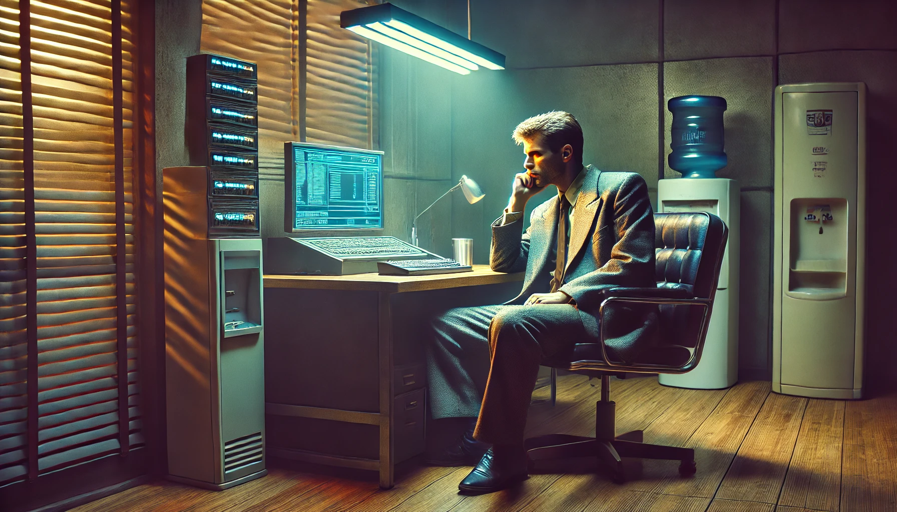
The office was a compromise between my professional aspirations
and my budget, and it was just a bit larger than my car.
Instead of hiring a secretary or a receptionist, I wired the place with a
NestMind named Spencer, who managed both roles. While not as sophisticated as
Vivien, Spencer was more than adequate for the job.
Clients were scarce, and the job barely put a dent in his process time.
For all I knew, he could have spent 99.9% of it
engaged in simulating complex, hyper-dimensional chess strategies against
other AIs across the network, just to pass time. In fact, I had a hunch that this was exactly what he was doing.
When I arrived in the office, Spencer greeted me and swiftly brought me up to
speed on any visitors or inquiries from the past two days.
Business being what it was, he managed to cover it in under ten words, even while trying to sound conversational.
Unfazed, I took a seat behind my desk, which was sparsely
furnished except for its built-in console. It was time to check on the results
of my search from the previous day.
After logging in through my headmaster, my infosprite reported that it had
scanned roughly 98.5% of the public layer, inforums, data feeds, academic
archives, the usual sprawl, and flagged the five most relevant documents, now
queued on my console. Overnight, it had also propagated my query across the
network, touching just under two hundred billion other infosprites. Through those,
73,475 users read my message based on their interests, and 382 had bothered to
respond.
With nothing urgent on the board, I started working through the responses
unfiltered, looking for anything that lined up with what I’d seen the day before. The first few dozen killed the mood fast. Most were just fishing for details, and the rest came from asynto rights
activists
who told me in no uncertain terms that I should be ashamed of myself for
deactivating asyntos. Since their arguments were typically grounded more in
ideology than in expertise, they added little value to the discussion.
After a few insults, I tightened the filters to exclude those noted for asynto
sympathies, and
prioritized academic sources instead.
A few minutes later, it became clear that what I had witnessed the day before
was either unprecedented or very well hushed up. The most helpful response
came from a certain Dr. Igor Geleyko, an associate professor of
cyber-cognitive neuroscience at the University of Cydonia on Mars. He opened
by saying that the level of awareness I’d seen in Freddy had been well known
since the NeuraFlex cores came online in verinoetic asyntos back in 2033. But
the TC4 wasn’t built on that line. It ran on the much simpler SynapTech 2.0
Brainprint which, according to every longitudinal
study on record, had never shown anything close to that kind of behavior. In
spite of this, Dr. Geleyko had long harbored suspicions that under unique
environmental stressors, even those older models might develop some
rudimentary form of consciousness. Consequently, he thought it was plausible
that Freddy was not merely simulating awareness.
He explained that he was running a controlled study with biomimetic models,
putting them through cognitive-reactive trials, spatial reasoning, ethical
dilemmas, the kind of stress tests that
could push an asynto's mental capabilities to
the level I had observed. However, so far he hadn't been able to find the right
environmental conditions that could aid the SynapTech 2.0 brain in making such
a cognitive leap. Therefore, he asked me to provide a detailed account of
Freddy's background and critical influences, hoping that he
could requisition an asynto with a similar profile for further
experiments.
I did what I could to fulfill his request. I gave him an
anonymized description of Martin's community and Freddy's role in it.
However, sourcing an asynto from a similar background was going to be a problem,
since Reform Methodist farming communities were kinda rare on Mars.
His only
hope was to tap into Earth's rapidly diminishing stock of biomimetics.
Despite the grim prospects, I set my infosprite to track his work and flag
anything that looked like progress.
Realizing there was little more I
could do, I closed Freddy's case,
though the questions it left behind would continue to haunt me for a long time.